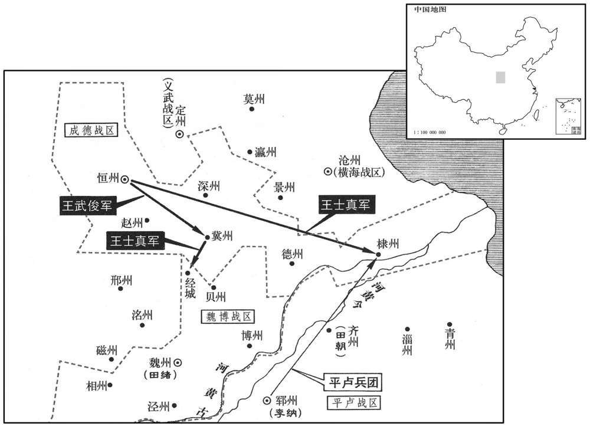

卷次与人物目录 / 卷233
资治通鉴 · 卷第二百三十三【唐纪四十九】
公元787年至公元791年 · 原文、白话与胡三省注
本页按胡注本编排保存全卷内容。白话采用本站所据译本，未可靠对应的内容另列说明；事件标题用于定位，并非原书文字。
本卷共84段原文，83段有译文对应，1段缺译或待核对。
卷第二百三十三【唐纪四十九】起强圉单阏（丁卯）八月，尽重光协（辛未），凡四年有奇。
卷首原文与注释
德宗神武圣文皇帝八
公元787年 · 唐德宗神武圣文皇帝贞元三年
贞元三年〔（丁卯、七八七）〕
上传原文的注释括号有异常，字符原样保留；无法可靠划分的段落默认全文显示。
本年记事分属相邻卷，按原书顺序分别保留：第232卷 · 第233卷。
本年事件索引（现代整理）
- 日食
- 吐蕃遣五骑送崔汉衡返唐，被李观拒绝入境
- 柳浑因与张延赏不和而罢相
- 郜国大长公主因淫乱、厌祷案被幽禁
- 李泌力谏德宗勿废太子而改立舒王
- 太子向李泌致谢，表示宁愿服药自尽
- 德宗听从李泌劝谏，确认太子无谋并惩处郜国党人
- 吐蕃攻陷陇州并掳掠泾、邠边境百姓
- 李泌请按定额供给宫中用度，停止诸道进贡
- 李泌劝德宗与回纥、南诏及大食结盟牵制吐蕃
- 回纥可汗遣使称臣，接受五项和约
- 德宗遣回纥使者归国并许嫁咸安公主
- 吐蕃攻陷华亭、连云堡并掳走大量居民
- 吐蕃进犯丰义城、长武城并修筑原州城
- 妖僧李软奴谋反被诛，北军将士大批受牵连
- 吐蕃因严寒及粮运不继撤军，唐军退屯就粮
- 韩游瑰入朝
- 兴元以来年景丰收，德宗命官府和籴
- 德宗狩猎时访问百姓赵光奇，听其陈述苛政
- 司马光批评德宗得知民情后仍未整顿政务
- 李泌请求大赦尚未被揭发的李软奴同党
八月，辛巳朔，日有食之。
八月，辛巳朔（初一），出现日食。
吐蕃尚结赞遣五骑送崔汉衡归，〔吐，从暾入声。汉衡为吐蕃所擒见上卷是年五月。骑，奇寄翻。〕且上表求和；至潘原，李观语之以「有诏不纳吐蕃使者」，〔上，时掌翻。观，古玩翻。语，牛倨翻。使，疏吏翻。〕受其表而却其人。
吐蕃尚结赞派遣骑兵五人护送崔汉衡回国，并且上表请求和好。到达潘原时，李观对他们讲“圣上颁诏命令不许接待吐蕃使者”，接受了他们的表章，但拒绝接待他们这一行人。
初，兵部侍郎、同平章事柳浑与张延俱为相，浑议事数异同，〔相，息亮翻。数，所角翻。〕延赏使所亲谓曰：「相公旧德，但节言于庙堂，则重位可久。」浑曰：「为吾谢张公，〔为，于伪翻。〕柳浑头可断，〔断，音短。〕舌不可禁！」〔禁，居吟翻。〕由是交恶。上好文雅酝藉，〔好，呼到翻。酝，纡运翻。藉，慈夜翻。史照曰：酝藉，有雅度之称。余谓照说非也。记礼器云：礼有摈诏，乐有相步，温之至也。郑氏注云：皆为温藉重礼也。皇氏云：温，谓丞藉。凡玉以物缊里丞藉，君子亦以威仪摈相以自丞藉。温，与缊同。〕而浑质直轻侻，无威仪，〔侻，他活翻〕。于上前时发俚语。上不悦，欲黜为王府长史，李泌言：「浑褊直无他。〔俚，音里。长，知丈翻。褊，补典翻。〕故事，罢相无为长史者。」又欲以为王傅，泌请以为常侍，上曰：「茍得罢之，无不可者。」〔于此可以见帝之亲任泌。泌，薄必翻。〕己丑，浑罢为左散骑常侍。〔散，悉亶翻。〕
当初，兵部侍郎、同平章事柳浑与张延赏一起出任宰相，柳浑在计议事情时，屡次与张延赏发生意见分歧。张延赏让亲近的人对柳浑说：“相公是有德望的老臣，只要在朝堂上少说话，宰相这一重要的职位便可保长久了。”柳浑说：“你替我向张公道歉吧，我柳浑的头可以被砍下，舌头讲话却是不能够禁止的！”自此以后，两人便结仇了。德宗喜欢斯文儒雅，不露锋芒，但柳浑朴实而正直，轻率而简易，不讲究庄严的举止，在德宗面前时常还说方言俗语，德宗心中不快，打算将他贬黜为王府长史。李泌说：“柳浑气量较小，但是心地正直，没有二心。依照旧日制度，宰相被罢免后，没有担任长史的。”德宗又打算任命他为诸王的师傅，李泌请求任命他为常侍，德宗说：“只要能罢免他的相职，无论任命他什么官职都是可以的。”己初（初九），柳浑被罢黜为左散骑常侍。
初，郜国大长公主适驸马都尉萧升；升，复之从兄弟也。〔郜，音告。长，知两翻。从，才用翻。〕公主不谨，詹事李升、蜀州别驾萧鼎、〔武后垂拱二年，分益州置蜀州、汉州。〕彭州司马李万、丰阳令韦恪，〔丰阳县，属商州，汉商县地，晋分商县置丰阳县，以川为名。旧治吉川城，麟德元年移治丰阳川。〕皆出入主第。主女为太子妃，始者上恩礼甚厚，主常直乘肩舆抵东宫；宗戚皆疾之。或告主淫乱，且为厌祷。〔厌，于琰翻，又一謟翻。〕上大怒，幽主于禁中，切责太子；太子不知所对，请与萧妃离婚。
当初，郜国大长公主嫁驸马都尉萧升。萧升是萧复的堂兄弟。公主的行为不够检点，詹事李升、蜀州别驾萧鼎、彭州司马李万、丰阳县令韦恪，都出入公主的府第。公主的女儿作了太子的妃子，开始时，德宗对公主所施的恩典与礼数甚是优厚，公主经常直接乘着肩舆到太子的东宫去，宗室亲戚都嫉妒她。有人告发公主行为放荡淫秽，而且为太子作过以诅咒制胜的祈祷。德宗大怒，将公主拘禁在宫中，严辞斥责太子。太子不知道如何回答是好，便请求与萧妃离婚。
上召李泌告之，且曰：「舒王近巳长立，〔长，知两翻。〕孝友温仁。」泌曰：「何至于是！陛下惟有一子，〔考异曰：按德宗十一子，谊、謜其所生外，犹有九子。而泌云惟有一子者，盖当是时小王或未生，谊、謜之外尚有昭靖子也。〕柰何一旦疑之，欲废之而立侄，得无失计乎！」上勃然怒曰：「卿何得间人父子！〔间，古苋翻。〕谁语卿，舒王为侄者﹖」对曰：「陛下自言之。大历初，陛下语臣，〔语，牛倨翻。〕『今日得数子』。臣请其故，陛下言『昭靖诸子，主上令吾子之。』〔昭靖太子，上弟邈也。〕今陛下所生之子犹疑之，何有于侄！〔当此之时，微李泌，孰能言及此者。〕舒王虽孝，自今陛下宜努力，勿复望其孝矣！」〔因父子天性，推而言及人情利害极处以感动之。复，扶又翻。〕上曰：「卿不爱家族乎﹖」对曰：「臣惟爱家族，故不敢不尽言。若畏陛下盛怒而为曲从，陛下明日悔之，必尤臣云：『吾独任汝为相，不力谏，使至此；必复杀而子。』〔而，汝也。〕臣老矣，余年不足惜，若冤杀臣子，使臣以侄为嗣，臣未知得歆其祀乎！」因鸣咽流涕。〔又以自家真情感动之。〕上亦泣曰：「事已如此，使朕如何而可﹖」对曰：「此大事，愿陛下审图之。臣始谓陛下圣德，当使海外蛮夷皆戴之如父母，岂谓自有子而疑之至此乎！臣今尽言，不敢避忌讳。自古父子相疑未有不亡国覆家者。陛下记昔在彭原。建宁何故而诛﹖」上曰：「建宁叔实冤，肃宗性急，谮之者深耳！」〔建宁王倓，德宗之叔也。倓冤死事见二百一十九卷肃宗至德元载。〕泌曰：「臣昔以建宁之故，固辞官爵，誓不近天子左右；〔近，其靳翻。〕不幸今日复为陛下相，又兹事。〔复，扶又翻。相，息亮翻。〕臣在彭原，承恩无比，竟不敢言建宁之冤，及临辞乃言之，肃宗亦悔而泣。〔事见二百二十卷至德二载。〕先帝自建宁之，死常怀危惧，臣亦为先帝诵黄台瓜辞以防谗构之端。」〔事见同上。为，于伪翻。〕上曰：「朕固知之。」意色稍解，乃曰：「贞观、开元皆易太子，何故不亡﹖」对曰：「臣方欲言之。昔承干屡尝监国，〔监，古衔翻。〕托附者众，东宫甲士甚多，与宰相侯君集谋反，事觉，太宗使其舅长孙无忌与朝臣数十人鞫之，事状显白，然后集百官而议之。当时言者犹云：『愿陛下不失为慈父，使太子得终天年。』太宗从之，并废魏不泰。〔事见一百九十有七卷贞观十七年。〕陛下既知肃宗性急，以建宁为冤，臣不胜庆幸。〔胜，音升。〕愿陛下戒覆车之失，从容三日，〔从，千容翻。〕究其端绪而思之，陛下必释然知太子之无他矣。若果有其迹，当召大臣知义理者二十人与臣鞫其左右，必有实状，愿陛下如贞观之法行之，并废舒王而立皇孙，则百代之后，有天下者犹陛下子孙也。至于开元之末，武惠妃谱太子瑛兄弟杀之，海内冤愤，〔事见二百一十四卷玄宗开元二十五年。〕此乃百代所当戒，又可法乎！且陛下昔尝令太子见臣于蓬莱池，〔大明宫中蓬莱殿北有太液池，池中有蓬莱山，所谓蓬莱池，盖即此也。〕观其容表，非有倮日豺声商臣之相也，〔左传：楚成王将立太子商臣，令尹子上曰：「不可，是人也，倮目而豺声，忍人也。」不听，卒立之。商臣后果以官甲围成王而杀之。〕正恐失于柔仁耳。又，太子自贞元以来常居少阳院，〔大明宫中有少阳院，在浴堂殿之东，温室殿西南。少诗照翻。〕在寝殿之侧，〔德宗常居浴堂殿。〕未尝接外人，预外事，安有异谋乎！彼谮人者巧诈百端，虽有手书如晋愍怀，〔事见八十三卷西晋惠帝元康九年。〕衷甲如太子瑛，〔开元二十五年，杨泂复构太子瑛、鄂王瑶、光王琚与妃兄薛锈有异谋。武惠妃使人诡召太子。二王曰：「中有贼，请甲以入。」太子从之。妃白帝曰：「太子、二王谋反，甲而来！」帝使中人视之，如言。遂并废为庶人。〕犹未可信，况但以妻母有罪为累乎！〔累，良瑞翻；下累汝同。〕幸陛下语臣，〔语。牛倨翻。〕臣敢以家族保太子必不知谋。向使杨素、许敬宗、李林甫之徒承此旨，已就舒王图定策之功矣！「上曰：「此朕家事，何豫于卿，而力争如此﹖」对曰：「天子以四海为家。臣今独任宰相之重，四海之内，一物失所，责归于臣。况坐视太子冤横而言，〔横，户孟翻。〕臣罪大矣！」上曰：「为卿迁延至明日思之。」〔为，于伪翻。〕泌抽笏叩头而泣曰：「如，此臣知陛下父子慈孝如初矣！然陛下还宫，当自审心，勿露此意于左右；露之，则彼皆欲树功于舒王，太子危矣！」上曰：「具晓卿意。」泌归。谓子弟曰：「吾本不乐富贵，而命与愿违，今累汝曹矣。」〔乐，音洛。累，力瑞翻。〕
德宗传召李泌，将此事告诉了他，而且说：“近来舒王已经成年，可以册立，他性情是孝敬友爱，温和仁厚的。”李泌说：“哪至于这样做呢！陛下只有一个儿子，怎么能够一时对他有了疑心，便打算将他废掉，而去册立侄子，这不是失策吗！”德宗勃然大怒，说：“你怎么能够离间人家的父子关系！谁告诉你舒王是我的侄子？”李泌回答说：“陛下自己讲的。那是在大历初年，陛下告诉我：‘今天我得到好几个儿子。’我问其中的原故，陛下说‘皇上让我将昭靖太子的几个儿子认作我的儿子。’如今陛下对自己亲生的儿子尚且起疑心，对侄子又会怎样！虽然舒王是孝敬陛下的，但若将他立为太子，从今以后，陛下最好还是勉力而为吧，不要再指望他的孝敬了！”德宗说：“你不爱护自己的家族吗？”李泌回答说：“正因为我爱护自己的家族，所以才不敢不把话说尽。如果我怕将陛下惹怒，便委曲从命，以后陛下后悔了，必定责怪我说：‘我专门任命你担任宰相，你却不能极力劝谏，使我落到这般地步，我一定要也把你的儿子杀掉。’我老了，晚年的岁月没有什么可顾惜的，如果陛下冤枉地杀掉我的儿子，使我将侄子立为后嗣，我真不知道将来是否能享受他的祭祀哩！”于是他鸣鸣咽咽地流下了眼泪，德宗也哭泣着说：“事情已经闹成这个样子，让朕怎么办才好呢？”李泌回答说：“这是一件大事，希望陛下审慎地设法应付吧。我最初以为陛下圣明仁德，会使大唐以外的蛮夷之人都尊奉陛下有如自己的父母，哪想到陛下连自己的儿子都怀疑到这般地步了呢！如今我已把话说尽了，不敢避开陛下忌讳的事。自古以来，父子相互猜疑，没有不使国家灭亡、家族倾覆的。陛下还记得以前在彭原时，建宁王是什么原因被诛杀的吗？”德宗说：“建宁王叔叔实际是冤枉的，肃宗性子急躁，而诬陷他的人们又深于计虑罢了。”李泌说：“过去，由于建宁王的原故，我坚决辞去了官职爵位，发誓不再靠近天子的身边，不幸的是今天又当了陛下的宰相，又目睹了这种事情。我在彭原时，承蒙肃宗皇帝无可比拟的恩典，但终究不敢说出建宁王是冤屈的，直到临辞行时，我才说了出来，肃宗也后悔地哭了。自从建宁王去世后，先帝常常心怀畏惧，我也曾经给先帝诵读《黄台瓜辞》，以防备谗言构陷的苗头。”德宗说：“联本来知道这些事情。”他的态度和脸色稍微缓和了一些，于是说：“贞观、开元年间都曾改立太子，为什么没有亡国之祸呢？”李泌回答说：“我正想谈这个问题。过去李承乾曾经屡次在皇上外出时代行处理国政，依托归附他的人很多，他居住的东宫所拥有的士兵又特别多。他与宰相侯君集图谋造反，事情被发觉后，太宗让他的舅舅长孙无忌与大臣几十人审讯他，将事情的原委都查问得一清二楚，然后太宗才召集百官来评议此事，当时的进言人尚且说：‘希望陛下不要失去作为慈父的本色，让太子能够活完他自然的寿命吧。’太宗听从了这一建议，便将他连同魏王李泰一齐废黜了。既然陛下知道肃宗性情急躁，认为建宁王是冤枉的，我真是万分庆幸。希望陛下能够将失败的教训引以为警戒，安闲地过上三天，推究此事的头绪，并将它们思考清楚，陛下一定会毫无疑虑地认定太子是没有二心的了。如果确有迹象，应当召集通晓义理的大臣二十人与我去审讯他的亲信，假如确有实在的情状，希望陛下实行贞观年间采用的办法，连同舒王一起废置而册立皇孙，那么，在百世以后，君临天下的人仍然是陛下的子孙后代啊。至于开元末年，武惠妃诬陷太子李瑛兄弟，杀了他们，全国的人都为他们的冤屈感到怨愤，这正是连百世以下都应当引以为教训的，难道还可以效法吗！而且，陛下过去曾经让太子在蓬莱池见过我，我看他的仪容外表，没有楚成王太子商臣那种蜂眼突出、声似豺狼的凶悍状貌，让我担心的正是太子会失之优柔仁厚哩。再者，自从贞元年间以来，太子经常住在少阳院，就在陛下下榻的宫殿旁边。他不曾接触外人，参予外界的事情，哪里会有作乱的图谋呢！那些蓄意诬陷的人机巧奸诈，手段变化多端，即使象西晋愍怀太子有亲手所写的反书，象开元年间太子李瑛有身披铠甲入宫的行动，尚且不可信是要谋反，何况太子仅仅是因为岳母犯了罪过而遭受连累的呢！幸亏陛下对我说了，我敢用我的家族来担保太子肯定不知道有此类策谋。假如让杨素、许敬宗、李林甫一类人逢迎陛下改立的意旨，他们现在已经到舒王那里图谋拥立新太子的功劳去了！”德宗说：“这是朕的家事，与你有什么关系，而你为什么这样极力谏诤呢？”李泌回答说：“天子以四海为家。如今我独力支承着宰相的重任，在四海之内，有一件事情处理失当，都是我没有尽到责任。何况眼巴巴地看着太子遭到冤屈而不发言，我的罪过就太大了！”德宗说：“朕为你推迟到明天考虑此事。”李泌抽出朝笏，向德宗叩头，还哭泣着说：“这样做，我知道陛下父慈子孝
太子遣人谢泌曰：「若必不可救，欲先自仰药，何如﹖」〔言欲饮药而死也。〕泌曰：「必无此虑。愿太子起敬起孝。〔起敬起孝，礼记之言。〕苟泌身不存，则事不可知耳。」
太子派人向李泌致谢说：“如果事情肯定不可挽回，我打算事先吞服毒药，你看怎么样呢？”李泌说：“肯定不必为此挂虑。希望太子奉行孝敬之道。如果我不在了，那倒是不知道事情会是什么样子了。”
间一日，〔按经典释文：间，音间厕之间。〕上开延英殿独召泌，〔宋白曰：唐制：内中有公事商量，即降宣头付合门开延英，合门翻宣申中书，井牓正衙门。如中书有公事敷奏，即宰臣入牓子，奏请开延英，只是宰臣赴对。〕流涕阑干，〔泣涕纵横为阑干。一曰：阑干，泪不断貌。〕抚其背曰：「非卿切言，朕今日悔无及矣！皆如卿言，太子仁孝，实无他也。自今军国及朕家事，皆当谋于卿矣。」泌拜贺，因曰：「陛下圣明，察太子无罪，臣报国毕矣。臣前日惊悸亡魂，〔悸，其季翻，心动也。〕不可复用，〔复扶又翻。〕愿乞骸骨。」上曰：「朕父子赖卿得全，方属子孙，属，之欲翻。〕使卿代代富贵以报德，何为出此言乎！」甲午，诏李万不知避宗，宜杖死。〔左传：齐卢蒲癸臣于庆舍，有宠，妻之以女。庆舍之士谓卢蒲癸曰：「男女辨姓，子不避宗，何也﹖」癸曰：「宗不余避，余独安避之!」〕李升等及公主五子，皆流岭南及远州。
隔了一天，德宗单独传召李泌来延英殿议事。德宗泪水纵横地哭着，抚摩着李泌脊背说：“若不是你极力进言，如今朕后悔也来不及了，一切都象你说的那样，太子仁厚孝敬，确实没有二心。从现在起，军务、国政以及朕的家事，朕都与你商量。”李泌跪拜道贺，趁机说：“陛下神圣英明，明察太子无罪，我报效国家就到此为止了。前天，我心跳加快，魂不守舍，不能再办理政务了。希望准许我退职。”德宗说：“朕父子依仗着你的帮助才得以保全，朕正要把子孙后代嘱托给你，使你世世代代得享富贵，以报答你的恩德，你怎么说出这样的话来了呢！”甲午（十四日），德宗颁诏说李万不晓得回避同宗，应该受杖刑而死。李升等人及公主的五个儿子，一概流放到岭南或边远的州去。
戊申，吐蕃帅羌、浑之众寇陇州，连营数十里，京城震恐。〔帅，读曰率。〕九月，丁卯，遣神策将石季章戍武功，决胜军使唐良臣戍百里城。丁巳，吐蕃大掠洴阳、吴山、华亭，〔吴山县，属陇州，隋之长蛇县地，唐贞观元年更名，以县有吴山也。史照曰：华亭，本属安定郡，后属陇州，垂拱二年更名曰亭川，元和三年省入洴源。洴，口坚翻。〕老弱者杀之，或断手凿目，弃之而去；〔断，音短。〕驱丁壮万余悉送安化峡西，〔安化峡，当在秦州清水县界。九域志：平凉西南七一里有安化县。又陇州洴阳县有安化镇。〕将分隶羌、浑，乃告之曰：「听尔东向哭辞乡国！」众大哭，赴崖谷死伤者千余人。未几，〔几，居岂翻。〕吐蕃之众复至，围陇州，〔复，扶又翻。〕刺史韩清沔与神策副将苏太平夜出兵击却之。〔沔，弥兖翻。〕
戊申（二十八日），吐蕃率领羌族、浑族的人马侵犯陇州，营地连绵几
十里地，京城震惊恐惧。九月，丁卯（十七日），朝延派遣神策军将领石季章戍守武功，派遣决胜军使唐良臣戍守里城。丁已（七日），吐蕃大规模地掳掠阳、吴山、华亭，杀戮年老体弱的人，有的砍断手臂，有的挖去眼睛，然后将他们抛弃。吐蕃军将成年壮丁一万多人全部驱赶到安化峡的西面，把他们分别归属于羌族和浑族，还告诉他们说：“准许你们向着东方哭泣，告别故乡！”大家放声哭号，从山崖跳下深谷而死亡和受伤的有一千多人。没过多久，吐蕃众军再次前来，包围陇州，陇州刺史韩清沔与神策副将苏太平在夜间派出兵马击退了他们。
上谓李泌曰：「每岁诸道贡献，共直钱五十万缗，今岁仅得三十万缗。〔泌，薄必翻。缗，眉巾翻。〕言此诚知失体，然宫中用度殊不足。」泌曰：「古者天子不私求财，〔春秋左传之言。〕今请岁供宫中钱百万缗，愿陛下不受诸道贡献及罢宣索。〔遣中使以圣旨就有司宣取财物，谓之宣索。索，山客翻。〕必有所须，请降敕折税，〔折，之舌翻。〕不使奸吏因缘诛剥。」上从之。
德宗对李泌说：“每年各道进贡的物品共计值钱五十万缗，今年只得到三十万缗。谈论此事，朕本来也知道有失体统，但是宫中的费用实在不够。”李泌说：“古时候，天子不私自谋求钱财，如今请让我每年供给宫中钱一百万缗，希望陛下不要接受各道进贡的物品，并停止颁旨向各地索取财货。如果一定需要什么东西，请陛下下达敕令，将所需物品折合成税钱，防止奸邪的吏人借机搜刮钱财。”德宗听从了这一建议。
回纥合骨咄禄可汗屡求和亲，且请昏；上未之许。会边将告乏马，无以给之，〔纥，下没翻。咄，当没翻。可，从刊入声。汗，户汗翻。将，即亮翻。〕李泌言于上曰：「陛下诚用臣策，数年之后，马贱于今十倍矣！」上曰：「何故﹖」对曰：「愿陛下推至公之心，屈己徇人，为社稷大计，臣乃敢言。」上曰：「卿何自疑若是！」对曰：「臣愿陛下北和回纥，南通云南，西结大食、天竺，如此，则吐蕃自困，马亦易致矣。」〔吐，从暾入声。易，弋豉翻。〕上曰：「三国当如卿言，至于回纥则不可！」〔以陕州之辱，恨回纥也。〕泌曰：「臣固知陛下如此，所以不早言。〔见上卷是年七月。〕为今之计，当以回纥为先，三国差缓耳。」〔三国，谓云南、大食、天竺。〕上曰：「唯回纥卿勿言。」泌曰：「臣备位宰相，事有可否在陛下，何至不许臣言！」〔相，息亮翻。〕上曰：「朕于卿言皆听之矣，至于〔【章：乙十六行本「于」下有「和」字；乙十一行本同；孔本同；张校同。】〕回纥，宜待子孙；于朕之时，则固不可！」泌曰：「岂非以陕州之耻邪！」上曰：「然。韦少华等以朕之故受辱而死，〔事见二百二十二卷宝应元年。陕，失冉翻。邪，音耶。少，始照翻。〕朕岂能忘之！属国家多难，〔属，之欲翻。难，乃旦翻。〕未暇报之，和则决不可。卿勿更言！」泌曰：「害少华者乃牟羽可汗，陛下即位，举兵入寇，未出其境，今合骨咄禄可汗杀之。然则今可汗乃有功于陛下，宜受封赏，又何怨邪！其后张光晟杀突董等九百余人，〔杀牟羽、杀突董事并见二百二十六卷建中元年。〕合骨咄禄竟不敢杀朝廷使者，〔见二百二十七卷建中三年。〕然则合骨咄禄固无罪矣。」上曰：「卿以和回纥为是，则朕固非邪﹖」对曰：「臣为社稷而言，〔为，于伪翻。〕若苟合取容，何以见肃宗、代宗于天上！」〔凡人言死，则曰见某人于地下。人主之前，尊君之祖、父，则曰见于天上，言其神灵在天，死则将得见之。〕上曰：「容朕徐思之。」自是泌凡十五余对，未尝不论回纥事，上终不许。泌曰：「陛下既不许回纥和亲，愿赐臣骸骨。」上曰：「朕非拒谏，但欲与卿较理耳，何至遽欲去朕邪！」对曰：「陛下许臣言理，此固天下之福也。」上曰：「朕不惜屈己与之和，但不能负少华辈。」对曰：「以臣观之，少华辈负陛下，非陛下负之也。」上曰：「何故﹖」对曰：「昔回纥叶护将兵助讨安庆绪，肃宗但令臣宴劳之于元帅府，先帝未尝见也。〔劳，力到翻。讨安庆绪之时，代宗以广平王为元帅。〕叶护固邀臣至其营，肃宗犹不许。及大军将发，先帝始与相见。所以然者，彼戎狄豺狼也，举兵入中国之腹，不得不过为之防也。陛下在陕，富于春秋，少华辈不能深虑，以万乘元子径造其营，〔造，七到翻。〕又不先与之议相见之仪，使彼得肆其桀骜，〔骜，五告翻。〕岂非少华辈负陛下邪﹖死不足偿责矣。且香积之捷，叶护欲引兵入长安，先帝亲拜之于马前以止之，叶护遂不敢入城。〔事见二百二十卷肃宗至德二载。〕当时观者十万余人，皆叹息曰：『广平王真华、夷主也！』然则先帝所屈者少，所伸者多矣。叶护乃牟羽之叔父也。牟羽身为可汗，举全国之兵赴中原之难，〔难，乃旦翻。〕故其志气骄矜，敢责礼于陛下；陛下天资神武，不为之屈。当是之时，臣不敢言其它，若可汗留陛下于营中，欢饮十日，天下岂得不寒心哉！〔不敢察察言，故云尔。〕而天威所临，豺狼驯扰，〔驯，从也，善也。扰者，顺也。〕可汗母捧陛下于貂裘，叱退左右，亲送陛下乘马而归。陛下以香积之事观之，则屈己为是乎﹖陛下屈于牟羽乎﹖牟羽屈于陛下乎﹖」上谓李晟、马燧曰：「故旧不宜相逄。朕素怨回纥，今闻泌言香积之事，朕自觉少理。〔此多少之少，音诗绍翻﹖〕卿二人以为何如﹖」对曰：「果如泌所言，则回纥似可恕。」上曰：「卿二人复不与朕，〔复，扶又翻。〕朕当柰何！」泌曰：「臣以为回纥不足怨，向来宰相乃可怨耳。今回纥可汗杀牟羽，其国人有再复京城之勋，〔回纥，至德二载与代宗复两京，宝应元年又与帝复东京，是有再复京城之勋。〕夫何罪乎！吐蕃幸国之灾，陷河、陇数千里之地，又引兵入京城，使先帝蒙尘于陕，〔见二百二十三卷代宗广德元年。〕此乃〔【章：乙十六行本「乃」下有「百代」二字；乙十一行本同；孔本同；张校同；退斋校同。】〕必报之雠，况其赞普〔【章：乙十六行本「普」下有「至今」二字；乙十一行本同；孔本同；张校同。】〕尚存，〔言牟羽巳死，则回纥为可恕；赞普尚存，则国雠当必复。〕宰相不为陛下别白言此，〔为，于伪翻。别，彼列翻。〕乃欲和吐蕃以政回纥，此为可怨耳。」上曰：「朕与之为怨巳久，又闻吐蕃劫盟，今往与之和，得无复拒我，为夷狄之笑乎﹖」〔复，扶又翻。〕对曰：「不然。臣曩在彭原，今可汗为胡禄都督，与今国相白婆帝皆从叶护而来，臣待之颇亲厚，故闻臣为相而求和，安有复相拒乎！臣今请以书与之约：称臣，为陛下子，每使来不过二百人，印马不过千匹，〔唐六典：有诸监马印。凡诸监马驹，以小官字印印左膊，以年示印印右髀，以监名依左、右厢印印尾侧。若形容端正，拟送尚乘者，则不须印监名。至三岁起，脊量强弱渐以飞字印印右膊。细马、次马俱以龙形印印项左。送尚乘者，于尾侧依左、右闲印以三花。其余杂马上乘者，以风字印印左膊，以飞字印印右髀。经印之后，简入别所者，各以新入处监名印印左颊。官马赐人者，以赐字印配诸运，及充传送驿者，以出字印并印右颊。诸蕃马印随部落各为印识。回纥马印侽俈俌俰。此所谓印马者，回纥以马来与中国为互市，中国以印印之也。〕无得携中国人及商胡出塞。五者皆能如约，则主上必许和亲。如此，威加北荒，旁詟吐蕃，〔詟，之涉翻。〕足以快陛下平昔之心矣。」上曰：「自至德以来，与为兄弟之国，今一旦欲臣之，彼安肯和乎﹖」对曰：「彼思与中国和亲久矣，其可汗、国相素信臣言，若其未谐，但应再发一书耳。」上从之。
回纥合骨咄禄可汗屡次谋求通好，而且请求通婚，德宗没有应允。适逢边疆的将领报告缺少马匹，朝廷拨不出马匹来供给他们，李泌便对德宗说：“陛下果真能够采用我的策略，几年以后，马匹的价格便只是现在的十分之一了！”德宗说：“这是怎么回事呢？”李泌回答说：“希望陛下能够用极为公正的态度对待此事，委屈自己，顺从别人，为国家的重大谋略着想，我才敢说出来。”德宗说：“你怎么如此疑虑！”李泌回答说：“我希望陛下在北面与回纥和好，在南面与云南交往，在西面与大食和天竺结交。如果能够做到这些，吐蕃便会自然困难起来，马匹也容易得到了。”德宗说：“对于云南、大食、天竺三国，就按你说的办吧，至于回纥，那是不行的！”李泌说：“我本来就知道陛下是持此态度的，所以不敢及早说出来。为当前考虑，应当将回纥排在首位，其余三国还可以略微往后排些哩。”德宗说：“只有回纥你不要谈。”李泌说：“我占着宰相的职位，裁定事情的可行与不可行，取决于陛下，但是哪至于不允许我讲话呢！”德宗说：“对于你所说的话，朕完全听从了。至于回纥，最好等待朕的子孙去解决。在朕在位时期，那是肯定不行！”李泌说：“莫不是由于陛下在陕州受到的耻辱吧！”德宗说：“是啊。韦少华等人由于朕的原故蒙受羞辱而死，朕怎么会忘记那些事情！那时适值国家多难，没有余暇来报复他们，至于通好，那是断然不行的。你不用再说了！”李泌说：“残害韦少华的是牟羽可汗。陛下即位后，他发兵前来侵犯，还没有走出国境，现在的合骨咄禄可汗便将他杀了。这样说来，现在的可汗对陛下是有功劳的，应当受到封拜赏赐，又哪里有什么怨恨呢！此后，张光晟杀了突董等九百多人，合骨咄禄还是不敢诛杀朝廷的使者，这样说来，合骨咄禄当然是没有罪过的了。”德宗说：“你认为与回纥和好是对的，那朕当然是不对的了？”李泌回答说：“我是为国家讲这番话的。倘若我去迎合陛下，以求容身，让我怎么到天上去见肃宗和代宗呢！”德宗说：“让我慢慢想一想吧。”自此以后，李泌大约奏对了十五次以上，没有一次不谈论有关回纥的事情，但德宗始终不肯答应下来。李泌说：“既然陛下不肯答应与回纥和好，希望准许我退职。”德宗说：“不是朕不接受规劝，只是朕想与你比较其中道理罢了，你怎么至于马上就要离开朕呢！”李泌回答说：“陛下允许我讲清道理，这当然是国家的福气啊。”德宗说：“朕并不顾惜委屈自己去与回纥和好，但朕不能够辜负了韦少华这些人。”李泌回答说：“在我看来，是韦少华这些人辜负了陛下，而不是陛下辜负了他们啊。”德宗说：“为什么
既而回纥可汗遣使上表称儿及臣，凡泌所与约五事，一皆听命。上大喜，谓泌曰：「回纥何畏服卿如此！」对曰：「此乃陛下威灵，臣何力焉！」上曰：「回纥则既和矣，所以招云南、大食、天竺柰何﹖」对曰：「回纥和，则吐蕃巳不敢轻犯塞矣。次招云南，则是断吐蕃之右臂也。〔断，音短。〕云南自汉以来臣属中国，〔云南，本汉之哀牢夷，后汉永平之间，始臣属中国，其地在汉永昌郡界。〕杨国忠无故扰之使叛，臣于吐蕃，〔事见二百一十六卷玄宗天宝九载。〕苦于吐蕃赋役重，未尝一日不思复为唐臣也。大食在西域为最强，自葱岭尽西海，地几半天下，〔大食既并波斯，突骑施又亡，其地东尽葱岭，西南际海，方万余里。几，居衣翻。〕与天竺皆慕中国，代与吐蕃为仇，臣故知其可招也。」
不久，回纥可汗派遣使者上表自称儿臣，凡是李泌与他们约定的五件事情，全部听从命令。德宗非常高兴，他对李泌说：“怎么回纥这样畏惧并折服于你呢！”李泌回答说：“这是陛下的声威与福气所致，我有什么力量！”德宗说：“回纥已经通和了，又应当怎样招抚云南、大食和天竺呢？”李泌回答说：“与回纥和好了，吐蕃便已经不敢轻易侵犯边界了。接下来招抚云南，就是砍断吐蕃右边的臂膀。自汉朝以来，云南都是中国的臣属。杨国忠没缘由地搅扰他们，使他们背叛朝廷，臣服于吐蕃。他们被吐蕃的繁重赋役搅犹得困苦不堪，没有一天不想再做唐朝的臣属啊。大食在西域各国中最为强盛，由葱岭起，直抵西海边，地域几占天下的一半。大食与天竺都仰慕中国，而又世代与吐蕃结下怨仇，所以我知道他们是可以招抚的。”
发亥，遣回纥使者合阙将军归，许以咸安公主妻可汗，〔蓬州咸安郡。公主，上女也。妻，七细翻。考异曰：邺侯家传：九月，泌请与回纥和亲。十月，与回纥书。十二月，回纥遣聿支达干上表谢恩，皆请如宰相约和亲。按实录：「八月丁酉，回纥遣默啜达干来贡方物，且请和亲。九月癸亥，遣回纥使合阙将军归其国。初，合阙将其君命请昏，上许以咸安公主嫁之，命见于麟德殿，且令赍公主画图就示可汗，以马价绢五万还之，许互市而去。」十二月，无聿支入聘之事。回纥自大历十一年以，未尝入寇，信使往来，亦无不和及求和之迹。盖德宗心恨回纥，而外迹犹羁縻不绝。今回纥请昏，则拒绝不许，而李泌劝与为昏耳。其月数之差，则恐李繁记之不详。或者聿支即默啜与合阙，皆不可知也，若以默啜即为请昏之使，合阙即为谢恩之人。水泌论回纥凡十五余对，须半月以上。泌又云：「臣木夹中与书，令朝臣递，云一月可到，岁内报至。」自丁酉至癸亥，纔二十六日耳。今依实录月日。因许嫁咸安，本其事而言之，〕归其马价绢五万疋。
癸亥（十三日），德宗打发回纥使者合阙将军回国，答应将咸安公主嫁给可汗，还以绢五万匹偿还他们的马价。
吐蕃寇华亭及连云堡，皆陷之。〔连云堡，在泾州西界。宋鄢曰：连云堡，泾要地也，三垂峭绝，北据高所，虏进退，烽火易通。考异曰：邺侯家传曰：「时京西诸镇报种麦已毕，绝万顷而皆亘野；上大喜。既而尚结赞来入寇，诸军闭壁；候夜，斫营，悉捷，结赞乃退归。上以十余年来，边军尝被戎挫，皆入践京畿，此来始败，又不能更深入，且报种麦已毕而喜甚。」按实录：「吐蕃陷华亭及连云堡，驱掠邠、泾编户牛畜万计，悉送至弹筝峡。是秋，数州人无种麦者。」与家传相反。今从实录。〕甲戍，吐蕃驱二城之民数千人及邠、泾人畜万计而去，置之弹筝峡西。泾州恃连云为斥候，连云既陷，西门不开，门外皆为虏境，樵采路绍。每收获，必陈兵以扞之，多失时，得空穗而已。〔禾麦熟而不收获，其实陨落，故得空穗。〕由是泾州常苦乏食。
吐蕃侵犯华亭以及连云堡，将两处都攻陷了。甲戌（二十四日），吐蕃人驱赶着华亭、连云堡二城的几千百姓和数以万计的州、泾州人和牲畜离去，将人和牲畜安置在弹筝峡的后面。泾州倚靠连云堡作为前哨，连云堡失陷后，西城大门难以开放，城门外都成了吐蕃的地盘，打柴的道路都被切断。每当收获时，必须布置军队来保卫庄稼，人们经常不能按时收获，仅得到无籽粒的禾穗罢了。自此以后，泾州常常因缺少粮食而困苦不堪。
冬，十月，甲申，吐蕃寇丰义城，〔武德二年，分彭原置丰义县，属宁州。宋白曰：彭阳县，后魏于县置云州，周武保定二年，废州为防，隋文帝废防为丰义城，唐武德初分彭原县为丰义县，属彭州，贞观废彭州，以县属宁州，其城即后魏云州城。〕前锋至大回原，邠宁节度使韩游緕击却之：乙酉，复寇长武城，〔复，扶又翻。〕又城故原州而屯之。
冬季，十月，甲申（初四），吐蕃侵犯丰义城，前锋来到大回原，宁节度使韩游击退了他们。乙酉（初五），吐蕃又去侵犯长武城，并修筑原州的故城，以屯驻兵马。
妖僧李软奴自言：「本皇族，见岳、渎神〔渎，谓四渎。妖，于遥翻。〕命己为天子；」结殿前射生将韩钦绪等谋作乱。丙戍，其党告之，上命捄送内侍省推之。〔推鞫也。〕李晟闻之，据仆于地曰：「晟族灭矣！」李泌问其故。晟曰：「晟新罹谤毁，〔事见上卷本年三月。〕中外家人千余，若有一人在其党中，则兄亦不能救矣。」泌乃密奏：「大狱一起，所连引必多，外间人情恟惧，请出付台推。」〔付御史台推鞫之也。〕上从之。钦绪，游緕之子也，亡抵邠州；游緕出屯长武城留后械送京师。壬辰，腰斩软奴等八人，北军之士坐死者八百余人，而朝廷之臣无连及者。韩游緕委军诣阙谢，上遣使止之，委任如初。游緕又械送钦绪二子；上亦宥之。
邪恶的僧人李软奴自称：“我本是皇族，现在五岳四渎的神灵命令我作天子。”他结交殿前射生将韩钦绪等人图谋发起变乱。丙戌（初六），他的同伙告发了他，德宗命令逮捕他，送交内侍省追究其事。李晟听到这个消息后，骤然仆倒在地上说：“我的家族要覆灭了！”李泌询问其中的原故，李晟说：“我新近才遭受了诽谤。在朝廷内外，我家族的人有一千多，倘若有一个人是他的同党，连你也不能挽救我了。”于是，李泌秘密上奏说：“大案一旦发生，牵连的人一定很多，外边人们的情绪震恐不安，请将此案由内侍省交付御史台审讯。”德宗同意了。韩钦绪是韩游儿子，他逃亡到州，正值韩游出兵屯驻长武城，留后给他上了枷锁，送往京城，壬辰（十二日），韩廷将李软奴等八人腰斩，北军将士犯罪至死的有八百多人。然而，朝廷中的臣僚没有受到牵连。韩游留下军队，自己前往朝廷谢罪，德宗派遣使者制止了他，对他的任用一如既往。韩游又将韩钦绪的两个儿子带上枷锁押送到朝廷来，德宗也宽宥了他们。
吐蕃以苦寒不入寇，而粮运不继；十一月，诏浑瑊归河中，〔考异曰：邺侯家传：「十一月，以张献甫为邠，宁等州节度使，代韩游緕，而以浑侍中为朔方、河中、绛、邠、宁、庆副元帅。先公乃令献甫修西界堡障、濠堑，南接泾州，于是塞内始有藩篱之固，尚结赞不能轻入窥边矣。」按献甫明年七月乃为邠宁节度。家传误也。〕李元谅归华州，刘昌分其众〔【章：乙十六行本「众下有「五千」二字；乙十一行本同；孔本同；张校同；退斋校同。】〕归汴州，〔刘昌，本汴州将也，贞元三年入朝，诏以汴兵八千戍泾原，寻授泾原帅。华，户化翻。〕自余防秋兵退屯凤翔、京兆诸县以就食。
吐蕃苦于天气严寒，不曾前来侵犯，然而官军的粮食运输也难以接济。十一月，德宗颁诏，命令浑回河中，李元谅回华州，刘昌分出部分人马回汴州，其余防御吐蕃的兵马撤退到凤翔、京兆各县驻扎，以便就地取得粮食供给。
十二月，韩游緕入朝。
十二月，韩游入京朝见。
自兴元以来，是岁最为丰稔，米斗直钱百五十、粟八十，诏所在和籴。
自从兴元年间以来，这一年的年景最丰熟，米一斗值一百五十钱。粟一半值八十钱，德宗颁诏命令在丰收的地区由官府和籴。
庚辰，上畋于新店，入民赵光奇家，问：「百姓乐乎﹖」对曰：「不乐。」上曰：「今岁颇稔，何为不乐﹖」〔乐，音洛。〕对曰：「词令不信。前云两税之外悉无他傜，今非税而诛求者殆过于税。后又云和籴，而实强取之，〔强，其良翻。〕曾不识一钱。始云所籴粟麦纳于道次，今则遣致京西行营，动数百里，车摧马〔【章：乙十六行本「马」作「牛」；乙十一行本同。】〕毙，破产不能支。愁苦如此，何乐之有！每有词书优恤，徒空文耳！恐圣主深居九重，皆未知之也！」上命复其家。〔复，方目翻。复，除也，除其家赋役也。〕
庚辰（初一），德宗在新店打猎，来到农民赵光奇的家中。德宗问：“老百姓高兴吗？”赵光奇回答说：“不高兴。”德宗说：“今年庄稼颇获丰收，为什么不高兴？”赵光奇回答说：“诏令没有信用。以前说是两税以外全没有其他徭役，现在不属于两税的搜刮大约比两税还多。以后又说是和籴，但实际是强行夺取粮食，还不曾见过一个钱。开始时说官府买进的谷子和麦子只须在道旁交纳，现在却让送往京西行营，动不动就是几百里地，车坏马死，人破产，难以支撑下去了。百姓这般忧愁困苦，有什么可高兴的！每次颁发诏书都说优待并体恤百姓，只是一纸空文而已！恐怕圣明的主上深居在九重皇宫里面，对这些是全然不曾知晓的吧！”德宗命令免除他家的赋税和徭役。
史家评论 · 原文及其白话
臣光曰：甚矣唐德宗之难寤也！自古所患者，人君之泽壅而不下达，小民之情郁而不上通；故君勤恤于上而民不怀，〔勤恤者，切于忧民也。〕民愁怨于下而君不知，以至于离叛危亡，凡以此此也。德宗幸以游猎得至民家，值言而知民疾苦，此乃千载之遇也。〔库，子亥翻。〕固当按有司之废格诏书，〔格，音阁。〕残虐下民，横增赋敛，〔横，户孟翻。敛，力赡翻。〕盗匿公财，及左右谄谀日称民间丰乐者而诛之；〔乐，音洛。〕然后洗心易虑，一新其政，屏浮饰，〔屏，必郢翻，又卑正翻。〕废虚文，谨号令，敦诚信，察真伪，辨忠邪，矜困穷，伸冤滞，则太平之业可玫矣。释此不为，乃复光奇之；夫以四海之广，兆民之众，又安得人人自言于天子而户户复其傜赋乎！
臣司马光曰：唐德宗真是太难以醒悟了！自古以来，人们所担忧的，是君主的恩泽壅塞着，不能传达到下面去，小民的情绪郁结着，不能通报到上边来。所以，君主在上面忧心怜恤，但百姓并不归向；百姓在下面忧愁怨苦，但君主并不晓得，终于导致百姓流离反叛，国家倾危败亡，大约道理就在于此。幸亏德宗因打猎得以来到百姓家中，正赶上赵光奇敢进直言，又了解民间的疾苦，这真是千载难逢的际遇啊。唐德宗本来应当查处有关部门搁置诏书，残酷地侵害百姓，横暴地增加赋税，盗窃和隐没公家资财的情况，以及自己周围那些天天称道民间丰熟喜乐的阿谀奉承之徒，将他们诛而杀之；然后洗除杂念，改变计虑，刷新朝政，摒弃浮华的装饰，废除空洞的具文，谨饬号令，勉励诚信，审察真伪，辨别忠奸，哀怜困穷，昭雪冤屈，天下太平的业绩便可以实现了。然而，唐德宗丢开这些不肯去做，却去免除赵光奇一家的赋役。然而，四海广大，百姓众多，又怎能人人都亲自向天子讲明情况，户户都得以免除徭役与赋税呢！
李泌以李软奴之党犹有在北军未发者，请大赦以安之。〔恐其自疑而动于恶。〕
李泌因李软奴的同伙还有在北军任职而未曾被揭发的人，便请求皇帝实行大赦，以使他们安定下来。
四年（戊辰、778
公元788年 · 唐德宗神武圣文皇帝贞四年
四年〔（戊辰、七八八）〕
本年事件索引（现代整理）
- 德宗大赦天下并规定两税税等每三年调整一次
- 李泌奏请加倍京官俸禄，德宗批准
- 刘昌、李元谅任泾原及陇右节度使
- 韩游瑰返镇后请求筑城，范希朝逃离军府
- 元友直运钱帛入京，李泌将其全部送入大盈库
- 司马光批评李泌助长德宗私藏财物
- 德宗听信白起显灵传言，李泌劝阻为其建庙
- 李泌请增设宰相，德宗为卢杞等人辩解
- 刘昌重修连云堡
- 殿前射生军改称神威军，列入十军
- 吴诜苛待福建军士引发兵变，被贬涪州
- 李元谅重筑良原旧城
- 南诏王异牟寻遣东蛮使者赴唐朝贡
- 吴凑任福建观察使，吴诜被贬
- 吐蕃大军秋季入寇，劫掠诸州人畜后撤退
- 阳城因品学兼优被征召为谏议大夫
- 邠宁兵变后韩游瑰离镇，朝晟平定乱军
- 奚、室韦袭击振武并杀死回纥使者
- 张献甫击退入侵宁州的吐蕃军
- 朝廷清查各道税外征收，引发民怨后下诏免除
- 回纥可汗接受和亲并请求改国号为回鹘
- 吐蕃借南诏兵分道攻西川，韦皋联东蛮击退
- 德宗册封咸安公主并加封回鹘可汗
- 韦晋、刘朝彩接连击败进犯清溪关的吐蕃军
- 李泌建议调张建封镇徐州以保障漕运
- 程日华去世，其子程怀直暂掌军务
- 吐蕃屡派使者诱迫南诏
春，正月，庚戍朔，赦天下；诏两税等第，自今三年一定。〔考异曰：实录：赦云：「天下两税，更审定等第，仍加三年一定，以为例程。」按陆贽论两税状云：「两税之立，惟以资产为宗，不以丁身为本。资产少者则其税少，资产多者则其税多。」然则当时税赋但以贫富为等第，若今时坊郭十等户、乡村五等户临时科配也。又云：「额内官勿更注拟，见任者三考勒停。」此盖用李泌之策也。按邺侯家传：」泌请罢天下额外官。」又云：「陆下许复所减官员，臣因请停额外官，许其得资后停。额外官员当正官三分之一，则今年计已停一半。」据此，则似有额内官，又有额外官，皆在正员之外。不则「内」皆应作「外」字之误也。〕
春季，正月，庚戌朔（初一），大赦天下。皇帝颁诏命令：从今以后，两税的等次每三年重定一次。
李泌奏京官俸太薄，请自三师以下悉倍其俸；〔唐以太师、太傅、太保为三师。倍俸，倍大历十二年所增之数也。泌，薄必翻。俸，扶用翻。考异曰：实录：「辛巳，诏以中外给用除陌钱给文武官俸料，自是京官益重，颇优裕焉。初除陌钱隶度支，至是令户部别库贮之，给俸之余，以备他用。」按兴元元年正月赦，其所加垫陌钱、税间架之类，悉宜停罢。今犹有除陌钱者，盖当时止罢所加之数，或私买卖者官不收垫陌钱，官给钱犹有除陌在故也。〕从之。
李泌奏称在京官员的薪俸过于菲薄，请求自三师以下的官员全部加倍发给薪俸，德宗照准。
壬申，以宣武行营节度使刘昌为泾原节度使。甲戍，以镇国节度使李元谅为陇右节度使。〔泾原节度使治泾州。陇右节度使治秦州。利昌以汴兵防秋，为行营节度使。李元谅本镇华州，领镇国军节度使。〕昌、元谅，皆帅卒力田，〔帅，读曰率；下同。〕数年，军食充羡，〔羡，弋线翻。〕泾、陇稍安。
壬申（二十三日），德宗任命宣武行营节度使刘昌为泾原节度使；甲戌（二十五日），任命镇国节度使李元谅为陇右节度使。刘昌与李元谅都率领士兵努力种田，几年以后，军中粮食充足，有了盈余，泾州和陇州逐渐安定下来。
韩游緕之入朝也，军中以为必不返，〔以其子钦绪党逆，谓当连坐也。緕，古回翻。朝，直遥翻。去年十二月游緕入朝。〕饯送甚薄。游緕见上，盛陈筑丰义城可以制吐蕃；上悦，遣还镇。〔见贤遍翻。吐，从暾入声。，还从宜翻，又音如字。〕军中忧惧者众，游緕忌都虞候虞乡范希朝有功名，得众心，〔虞乡县，属河中府。〕求其罪，将杀之。希朝奔凤翔，上召之，置于左神策军。游緕帅众筑丰义城，二版而溃。〔城二尺为一版。上下相疑，故溃。〕
韩游入京朝见时，军中将士认为他肯定一去难返，为他饯别送行，备办得甚为菲薄。韩游见到德宗后，极力陈述修筑丰义城可以控制吐蕃，德宗闻言大悦，便打发他返回本镇。很多军中将士忧虑恐惧。韩游嫉妒都虞候虞乡人范希朝有功绩和名声，得到大家的拥护，便寻找他的罪过，准备杀掉他。范希朝逃奔凤翔，德宗召他回京，在左神策军中安置下来。韩游率领部众修筑丰义城，只修筑了四尺高，便塌落下来了。
二月，元友直运淮南钱帛二十万至长安，〔元友直句勘东南两税钱帛，见上卷去年七月。〕李泌悉输之大盈库。然上犹数有宣索，〔泌，薄必翻。数，所角翻。索，山客翻。〕仍敕诸道勿令宰相知。泌闻之。惆怅而不敢言。〔相，息亮翻。惆，丑鸠翻。〕
二月，元友直将淮南的二十万钱帛运送到长安，李泌将它们悉数送到大盈内库。然而，德宗仍然屡次传旨向地方索取财物，还命令各道不要让宰相知道，李泌听说后，心中懊恼而不敢直言。
史家评论 · 原文及其白话
臣光曰：王者以天下为家，天下之财皆其有也。阜天下之财以养天下之民，己必豫焉。或乃更为私藏，此匹夫之鄙志也。古人有言：贫不学俭。夫多财者，奢欲之所自来也。〔夫，音扶。〕李泌欲弭德宗之欲而丰其私财，财丰则欲滋矣。财不称欲，能无求乎！〔弭，眉比翻。称，尺证翻。〕是犹启其门而禁其出也！虽德宗之多僻，亦泌所以相之者非其道故也。
臣司马光曰：君主把整个天下当作自己的家，天下的资财都是他所拥有的。使天下的资财繁盛起来，以赡养天下的百姓，自己也一定是快乐的。有的君主竟然还要经营私人储藏，这是凡夫的鄙下的志趣。古人说过：贫穷的人不用学节俭而节俭的品德自然具备。一般说来，富有资财，是产生奢侈的欲望的根源。李泌打算消弭德宗的欲望而充实他的私人资财，资财充实了，欲望便也滋长起来了。资财不能满足欲望，怎么能够没有需索呢！这就象打开大门而禁止出行一样啊！虽然说德宗是有许多偏执之处的，但也由于李泌出任他的宰相所做的事情并不符合正道的原故啊。
咸阳人或上言：「臣见白起，令臣奏云：『请为国家扞御西陲。正，吐蕃必大下，当为朝廷破之以取信。』」〔上，时掌翻。为，于伪翻。〕既而吐蕃入寇，边将败之，〔败，补迈翻。〕不能深入。上以为信然，欲于京城立庙，赠司徒，李泌曰：「臣闻『国将兴，听于人。』〔左传虢史嚚之言。〕今将帅立功而陛下褒赏白起，臣恐边臣解体矣！若立庙京城，盛为祈祷，流闻四方，将长巫风。〔长，知两翻。言巫祝之风将由此盛。〕今杜邮有旧祠，〔白起死于杜邮，故有旧祠在焉。〕请赠兵部尚书可矣。」上笑曰：「卿于白起亦惜官乎！」对曰：「人神一也。陛下傥不之惜，则神亦不以为荣矣。」上从之。
咸阳居民中有人进言说：“我看见白起了，他让我上奏说：‘请让我为国家捍卫西部边疆。正月，吐蕃一定会大规模入侵，我自当为朝廷打败他们，以便取得信用。’”不久，吐蕃前来侵犯，边疆将领打败了他们，使他们未能深入。德宗认为事有效验，准备在京城建立祠庙，追封白起为司徒。李泌说：“我听说：‘国家将要兴起时，要听取人民的呼声。’现在将帅立下功勋，陛下反而追封白起，我恐怕边疆的臣下就要人心离散了！如果在京城建立祠庙，大事祈祷，在各地传播开来，将会助长相信巫祝的风气。如今杜邮有白起的故祠，请敕所在府县修葺祠堂，便不至于使人们的视听受到惊动了。而且，白起是诸侯国中的将领，追封为三公，地位过高，请追封他为兵部尚书就可以了。”德宗笑着说：“你对白起也吝惜官位吗！”李泌回答说：“人和神是一致的。倘若陛下不珍惜官位，神也就不认为追封官位是荣耀的了。”德宗听从了他的建议。
泌自陈衰老，独任宰相，精力耗竭，既未听其去，乞更除一相；上曰：「朕深知卿劳苦但未得其人耳。」上从容与泌论即位以来相〔从，千容翻。〕曰：「卢杞忠清强介，人言杞奸邪，朕殊不觉其然。」泌曰：「人言杞奸邪而陛下独不觉其奸邪，此乃杞之所以为奸邪也。〔考异曰：旧李勉传，勉对德宗已有此语，与邺侯家传述泌语略同，未知孰是。今两存之。一本泌语之下「有与勉」二字。〕傥陛下觉之，岂有建中之乱乎！杞以私隙杀杨炎，〔杀杨炎事见二百二十七卷建中二年。〕挤颜真卿于死地，〔事见二百二十八卷建中二年。挤，七细翻。又笺西翻。〕激李怀光使叛，〔事见二百二十九卷建中四年。〕赖陛下圣明窜逐之，人心顿喜，天亦悔祸。不然，乱何由弭！」上曰：「杨炎以童子视朕，每论事，朕可其奏则悦，与之往复论难，〔难，乃旦翻；下难之、问难同。〕即怒而辞位；观其意以朕为不足与言故也。以是交不可忍，〔交不可忍者，言炎既形之辞而帝亦心怀不平。〕非由杞也。建中之乱，术士豫请城奉天，〔事见二百二十六卷建中元年。〕此盖天命，非杞所能致也！」泌曰：「天命，他人皆可以言之，惟君相不可言。盖君相所以造命也。若言命，则礼乐刑政皆无所用矣。纣曰：『我生不有命在天！』〔见书西伯戡黎篇。〕此商之所以亡也！」上曰：「朕好与人较量理体：〔好，呼到翻。量，音良。理体，犹言治体也。〕崔佑甫性褊躁，〔躁，则到翻。〕朕难之，则应对失次，朕常知其知护之。杨炎论事市有可采，而气色粗傲，难之辄勃然怒，无复君臣之礼，所以每见令人忿发。余人则不敢复言。〔，难乃旦翻；下同。复，扶又翻。〕卢杞小心，朕所言无不从；又无学，不能与朕往复，故朕所怀常不尽也。」对曰：「杞言无不从，岂忠臣乎！夫『言而莫予违』，此孔子所谓『一言丧邦』者也！」〔见论语。丧，息浪翻。〕上曰：「惟卿则异彼三人者。朕言当，卿有喜色；不当，常有忧色。〔当，丁浪翻。〕虽时有逆耳之，言如向来纣及丧邦之类。朕细思之，皆卿先事而，〔言先，悉荐翻。〕如此则理安，〔理安，犹言治安也。〕如彼则危乱，言虽深切而气色和顺，无杨炎之陵傲。朕问难往复，卿辞理不屈，又无好胜之志，直使朕中怀已尽屈服而不能不从，此朕所以私喜于得卿也。」泌曰：「陛下所用相尚多，今皆不论，何也﹖」上曰：「彼皆非所谓相也。凡相者，必委以政事；如玄宗时牛仙客、陈希烈，可以谓之相乎！如肃宗、代宗之任卿，虽不受其外，乃真相耳。必以官至平章事为相，则王武俊之徒皆相也。」〔唐之使相，时主未尝不知名器之滥也。〕
李泌上言说自己年老体弱，独自担任宰相的职务，精神气力消耗殆尽，既然不能听凭他离开相位，请求再任命一位宰相。德宗说：“朕深深了解你的劳碌，只是没有找到合适的人选罢了。”德宗不慌不忙地与李泌谈论自己即位以来的宰相说：“卢杞忠实而清廉，强干而耿直，人们说卢杞邪恶，朕觉得他实在不是这个样子。”李泌说：“人们都说卢杞是邪恶的，唯独陛下不能觉察他的邪恶，这正是卢杞堪称邪恶的道理所在啊。倘若陛下觉察了他的邪恶，难道会发生建中年间的变乱吗？卢杞因私人的嫌隙而杀了杨炎，将颜真卿排挤到必死之地，激怒李怀光，使他背叛了朝廷，全仗着陛下神圣英明，将他流放了，人们的心情顿时高兴起来，上天也追悔所造成的灾祸。否则，变乱怎么能够消弭呢！”德宗说：“杨炎把朕看作小孩子，每当议论事情时，朕赞成他的奏陈，他就高兴，朕与他反复辩论诘难，他便气冲冲地要求辞去相位，朕看他的本意，是认为不值得与朕交谈吧。由于这个原因，朕与他相互不能容忍，这并不是由于卢杞啊。建中年间的变乱，道术之士预先便建议修筑奉天城，这恐怕是天命如此，而不是卢杞能够招致的！”李泌说：“天命，别人都可以谈论它，只有君王和宰相不能谈论，因为君王和宰相就是制造命运的人物。如若谈论命运，礼乐刑政便全然没有用场了。殷纣王说：‘我生来不就是由天命决定的吗！’这正是商朝来灭亡的原因啊！”德宗说：“朕喜欢跟别人比较治国的经验。崔甫性情狭隘急躁，朕诘问他，他回答得语无伦次，朕知道他的短处，便经常维护他。杨炎议论事情，还是有可以采纳的意见的，但是他态度粗率狂傲，朕诘问他，他动不动就勃然大怒，毫不顾及君臣的礼节。所以一看到他，就叫人生气，其余的人则不敢再说话了。卢杞小心谨慎，凡是朕所说的，他没有不听从的，加上他没有学识，不能与朕反复争论，所以朕想要说的话经常是没有穷尽的。”李泌回答说：“卢杞对陛下的话无不听从，难道就是忠臣吗！‘我讲的话，是没有人敢于违背的。’这正是孔子所说的‘一句话讲出来可以使国丧失掉’的意思啊！”德宗说：“只有你与他们三人是不同的。朕讲得妥当，你的脸上是喜气洋洋的，朕讲得不妥当，你的脸上便常常要显出忧愁的样子。虽然你时而会说出刺耳的话来，就如刚才你谈到商纣王以及使国家丧失掉这一类话一样，但是，朕仔细琢磨过你讲的话，全是你在事情发生以前所做的忠告，按照这些话去做，就会政治清明，国家安定，而按照朕原来那些想法去做，就会招致危机，引发变乱。虽然你说的话深深切中朕的缺失，但是面色和蔼温顺，不象杨炎那样傲气凌人。朕反复对你诘责，你在言辞和道理上并不屈从，但又没有逞强好胜的意图，直至使朕内心已经完全屈服，因而不能不听从你的意见。这便是朕为得到你而自己高兴的原因啊。”李泌说：“陛下任用的宰相还多着哩，如今一概不加评论，这是为什么呢？”德宗说：“他们都不是人们所说的宰相啊。凡是出任宰相的，就一定要把行政事务交给他们。比如玄宗时期的牛仙客、阵希烈，能够把他们称作宰相吗？又如肃宗、代宗任用你，虽然你没有得到宰相的名称，但这就是真正的宰相了。如果一定认为官职达到平章事才是宰相，那么，王武俊这一类人便都是宰相了。
刘昌复筑连云堡。〔去年九月，吐蕃陷连云堡。复，扶又翻。〕
刘昌重新修筑连云堡。
夏，四月，乙未，更命殿前左右射生曰神威军，〔更，工衡翻。考异曰：实录作「神武军」。今从新志〕与左．右羽林、龙武、神武、神策号日十军。神策尤盛，戍京西，散屯畿甸。
夏季，四月，乙未（十八日），德宗又将殿前左、右射生军改名为左、右神威军，与左右羽林、龙武、神武、神策各军合起来号称十军。其中神策军尤其强盛，他们多数戍守京西，零散地驻扎在京城地区。
福建观察使吴诜〔武德四年，分泉州之建安县置建州。〕轻其军士脆弱，苦役之。军士作乱，杀诜腹心十余人，逼诜牒大将郝诫溢掌留务。诫溢上表请罪，上遣中使就赦以安之。
福建观察使吴诜因部下将士怯懦软弱而轻视他们，极力役使他们。将士发起变乱，杀掉了吴诜的亲信十多个人，逼迫吴诜写文书召大将郝诫溢掌管留后事务。郝诫溢上表请求治罪，德宗派遣中使就地赦免，使他安下心来。
乙〔【严：「乙」改「丁」。】〕未，陇右节度使李元谅筑良原故城而镇之。〔良原县，随大业初置，唐属泾州，贞元二年为吐蕃所破，今乃修复。九域志：良原，在泾州西南六十里。宋白曰：随分安定、鹑觚置良原县，西南三十里有良原，因名。〕
乙未（十八日），陇右节度使李元谅将良原旧有的城池修筑起来，并镇守在那里。
云南王异牟寻欲内附，未敢自遣使，先遣其东蛮鬼主骠旁、苴万冲、苴乌星入见。〔苴，子鱼翻。见，贤遍翻。〕五月，乙卯，宴之于麟德殿，赐赉甚厚，封王给印而遣之。〔封骠旁为和义王，苴梦冲为怀化王，苴乌星为顺政王。〕
云南王异牟寻打算归附朝廷，但不敢自行派遣使者，首先派遣他的东蛮鬼主骠旁、苴梦冲、苴乌星入京朝见。五月，乙卯（初八），德宗在麟德殿设宴款待他们，对他们的赏赐甚为丰厚，还封他们为王，发给印绶，然后打发他们回去。
辛未，以太子宾客吴凑为福建观察使，贬吴诜为涪州刺史。〔涪，音浮。〕
辛未（二十四日），德宗任命太子宾客吴凑为福建观察使，将吴诜贬黜为涪州剌史。
吐蕃三万余骑寇泾、邠、宁、庆、鄜等州。先是，吐蕃常以秋冬入寇，及春多病疫而退。至是，得唐人，质其妻子，〔先，悉荐翻。质，音致。〕遣其将将之，盛夏入寇；诸州皆城守，无敢与战者，吐蕃俘掠人畜万计而去。
吐蕃三万多骑兵侵犯泾、、宁、庆、等州。在此之前，吐蕃经常选择秋天和冬天前来侵犯，及至春天，往往因染上瘟疫而退却。至此，吐蕃得到唐朝的百姓后，将他们的妻子儿女留作人质，派遣吐蕃将领带领着这些百姓，在夏天最热时前来侵犯，各州都据城守备，没有人敢同他们交战，吐蕃俘获虏掠了数以万计的人丁与牲畜，便离去了。
夏县人阳城以学行着闻，隐居柳谷之北，〔夏，户雅翻。柳谷，在安邑县中条山。行，下孟翻。〕李泌荐之；六月，征拜谏议大夫。
夏县人阳城以学问与品行著称于世，他在柳谷北面隐居，李泌推荐他；六月，他被征召任命为谏议大夫。
韩游緕以吐蕃犯塞，自戍宁州；病，求代归。秋，七月，庚戍，加浑瑊邠宁副元帅，以左金吾将军张献甫为邠宁节度使，陈许兵马使韩全义为长武城行营节度使。献甫未至，壬子夜，游緕不告于众，轻骑归朝。戍卒裴满等惮献甫之严，乘无帅之际，癸丑，帅其徒作乱，〔骑，奇寄翻。朝，直遥翻。无帅，所类翻。帅其，读曰率。〕曰：「张公不出本军，我必拒之。」〔谓张献甫本不出于朔方军也。〕因剽掠城市，〔剽，匹妙翻。〕围监军杨明义所居，使奏请范希朝为节度使。都虞候朝晟避乱出城，闻之，复入，曰：「所请甚契我心，我来贺也！」乱卒稍安。朝晟潜与诸将谋，晨勒兵，召乱卒谓曰：「所请不行，张公已至邠州，汝辈作乱当死，不可尽杀，宜自推列唱帅者。」遂斩二百余人，帅众迎献甫。〔帅，读曰率。〕上闻军众欲得范希朝，将授之。希朝辞曰：「臣畏游緕之祸而来，今往代之，非所以防窥觎，安反仄也。」上嘉之，擢为宁州刺史，以副献甫。游緕至京师，除右龙武统军。
由于吐蕃侵犯边塞，韩游亲自戍守宁州，但他得了病，请求派人将自己替代回去。秋季，七月，庚戌（初五），德宗加封浑为宁副无帅，任命左金吾将军张献甫为宁节度使，任命陈许兵马使韩全义为长武城行营节度使。在张献甫没有到职之前，壬子（初七）夜里，韩游没有告诉众人，便轻装骑马回朝廷去了。戍卒裴满等人害怕张献甫的严厉，便乘着没有主帅的时机，在癸丑（初八）率领他的同伙发起变乱。他说：“张公本不出于本军，我一定要抗拒他。”于是，他们到市肆去抢劫，还包围了监军杨明义的住所，让他上奏请求任命范希朝为本镇节度使。都虞候杨朝晟躲避变乱，逃出城来，听说要请范希朝出任节度使，便又进入城中，他说：“你们所请求的，很合我的心意，我是来庆贺的呢！”作乱的士兵稍微安定了一些。杨朝晟暗中与各将领计议了一番，早晨率领着兵马，召集作乱的士兵，对他们说：“你们所要求的事情难以实现了。张公已经来到州，你们发动变乱，应当处死，但不会将你们都杀了，你们最好自己推举出带头的人来。”于是他斩杀了二百余人，率领大家迎接张献甫。德宗听说军中人众愿意让范希朝统领，便准备授给他一职务。范希朝推辞说：“我是因畏忌韩游的迫害才回来的，如今前去替代他的职务，这可不是防范阴谋、安定动荡局面的办法啊。”德宗嘉许他，将他提升为宁州刺史，作为张献甫的副手。韩游来到京城后，被任命为右龙武统军。
振武节度使唐朝臣不严斥候，己未，奚、室韦寇振武，〔李延寿曰：室韦，盖契丹之在南者为契丹，在北者为室韦。宋祁曰：室韦，契丹别种，东胡北边，盖丁零苗裔也。地据黄龙北，傍峱越河，直长安东北七千里。东黑水、靺鞨，西突厥，南契丹，北濒海。〕执宣慰中使二人，大掠人畜而去。时回纥之众逆公主者在振武，朝臣遣七百骑与回纥数百骑追之，回纥使者为奚、室韦所杀。
由于振武节度使唐朝臣未能严密侦察敌情，己未（十四日），奚人和 室韦人侵犯振武，捉住前来安抚军心的中使二人，在大量掳掠人口和牲畜以后，便离去了。当时，迎接公主的回纥人众正在振武，唐朝臣派遣骑兵七百人与回纥骑兵数百人追击他们，回纥的使者被奚人、室韦人杀掉了。
九月，庚申，吐蕃尚志〔【严：「志」改「悉」。】〕董星寇宁州，张献甫击却之；吐蕃转掠鄜、坊而去。
九月，庚申（十六日），吐蕃尚悉董星侵犯宁州，张献甫击退了他们。吐蕃转而在州和坊州掳掠了一番，便离去了。
元友直句检诸道税外物，〔事始见上卷上年。句，古侯翻。〕悉输户部，遂为定制，岁于税外输百余万缗、斛，民不堪命。诸道多自诉于上，上意寤，诏：「今年巳入在官者输京，未入者悉以与民；明年以后，悉免之。」于是东南之民复安其业。
元友直检查各道在税收以外加征的财物，并将它们全部上缴户部。以后这种做法便成了固定的制度，每年要在税收以外缴纳一百余万缗、斛，百姓难以忍受这种索求。各道经常向德宗反映这种情况，德宗心中理解了他们的疾苦，于是颁诏：“今年已经收入官府的税收以外的财物可以运往京城，还没有收入官府的，全部交还给百姓。从明年起，悉数免除。”于是，东南地区的百姓又安心从事他们的本业了。
回纥合骨咄禄可汗得唐许昏，甚喜，遣其妹骨咄禄毗伽公主及大臣妻并国相、閖跌都督〔閖，奚结翻。跌，徒结翻。閖跌与回纥同出铁勒而异种。〕以下千余人来迎可敦，辞礼甚恭，曰：「昔为兄弟，今为子伲，半子也。若吐蕃为患，子当为父除之!」〔当为，于伪翻。〕因詈辱吐蕃使者以绝之。冬，十月，戊子，回纥至长安，可汗仍表请改回纥为回鹘；许之。〔考异曰：旧回纥传：「元和四年，里迦可汗遣使请改为回鹘，义取回旋轻捷如鹘。」崔铉续会要：「贞元五年七月，公主至衙帐，回纥使李义进请改『纥』字为『鹘』。」与统纪同。邺侯家传：「四年七月，可汗上表请改『纥』字为『鹘』，」与李繁北荒君长录柔新回鹘传同。按李泌明年春薨，若明年七月方改，家传不应言之。今从家传、君长录、新书。〕
回纥合骨咄禄可汗得到唐朝允许通婚的消息后，非常高兴，便派出他的妹妹骨咄禄毗伽公主以及大臣的妻子，连同国相、跌都督以下一千多人，前来迎接可汗的妻子阿敦，措辞与执礼都很恭敬。他们说：“往日两国结为兄弟，如今可汗是皇上的女婿，是皇上的半个儿子了。如果吐蕃危害朝廷，儿子自当为父亲除去他们。”于是回纥责骂、侮辱了吐蕃的使者，与吐蕃断绝了往来。冬委，十月，戊子（十四日），回纥使者来到长安，可汗上表请求将回纥改称为回鹘，德宗答应了。
吐蕃发兵十万将寇西川，亦发云南兵；云南内虽附唐，外未敢叛吐蕃，亦发兵数万屯于泸北。〔泸北，泸水之北。泸水，即诸葛亮五月所渡者。〕韦皋知云南计方犹豫，乃为书遗云南王，叙其叛吐蕃归化之诚，贮以银函，〔遗，唯季翻。〕使东蛮转致吐蕃。吐蕃浆疑云南，遣兵一万屯会川，〔会川，本邛都县，高宗上元二年徙县于会川，因更名。新志：会川县属巂州，有泸津关，在会川东南三十里。〕以塞云南趣蜀之路。〔塞，悉则翻。趣，逡谕翻，又逡须翻。〕云南怒，引兵归国。由是云南与吐蕃大相猜阻，归唐之志益坚；吐蕃失云南之助，兵势始羽矣。然吐蕃业巳入寇，遂分兵四万政两林、骠旁，三万政东蛮，七千寇清溪关，〔清溪关，在巂州界，自关而南七百二十里至巂州。洪源志：清溪关，在黎州西南界。〕五千寇铜山。〔新志：黎州有铜山要冲十一城。〕皋遣黎州刺史韦晋等与东蛮连兵御之，破吐蕃于清溪关外。
吐蕃征发十万兵马，准备侵犯西川，同时也征发云南兵马。云南虽然暗中已经归附唐朝，但表面上还不敢背叛吐蕃，因而也派出数万兵马在泸水北岸驻扎。韦皋了解到云南王还在拿不定主意，便写了一封给云南王的书信，在信中陈述了云南王叛离吐蕃，归于王化的诚意，装在银盒子中，让东蛮转交吐蕃。吐蕃开始怀疑云南王，便派兵两万在会川驻扎，以便堵住云南前往蜀中的通路。云南王大怒，领兵回国去了。自此以来，云南与吐蕃互相猜疑，云南归顺唐朝的意图愈发坚定，而吐蕃失去云南的帮助，军队的声势便开始削弱了。然而，吐蕃已经出兵，于是分出四万兵马攻打两林，骠旁，三万兵马攻打东蛮，七千兵马侵犯清溪关，五千兵马侵犯铜山。韦派遣黎州刺史韦晋等人与东蛮联合兵马，抵御吐蕃，在清溪关外面打败了他们。
庚子，册命咸安公主，加回鹘可汗〔【章：乙十六行本「汗」下有「号」字；孔本同；张校同。】〕长寿天亲可汗。十一月，以刑部尚书关播为送咸安公主兼册回鹘可汗使。〔自此以后，通鉴皆依前史书「回鹘」。〕
庚子（二十六日），德宗册封咸安公主，加封回鹘可汗为长寿天亲可汗。十一月，任命刑部尚书关播为护送咸安公主兼册回鹘可汗使。
吐蕃耻前日之败，〔谓上清溪关外之败也。〕复以众二万寇清溪关，一万政东蛮；〔复，扶又翻。〕韦皋命韦晋镇要冲城，督诸军以御之。巂州经略使刘朝彩出关连战，自乙卯至癸亥，大破之。
吐蕃以不久前遭受的失败为耻辱，又派兵马二万侵犯清溪关，派兵马一万进攻东蛮，韦皋命令韦晋镇守要冲城，监督各军抵御吐蕃，州经略使刘朝彩出关连续接战，从乙卯（十一日）到癸亥（十九日），大破吐蕃。
李泌言于上曰：「江、淮漕运〔【章：乙十六行本「运」下有「自淮入汴」四字；乙十一行本同；孔本同；退斋校同。】〕以甬桥为咽喉，〔咽，音烟。〕地属徐州，邻于李纳，〔徐州与李纳巡属邻境。〕刺史高明应年少不习事，〔高明应嗣镇徐州，始二百三十一卷兴元元年。少，诗照翻。〕若李纳一旦复有异图，〔复，扶又翻；下同。〕窃据徐州，是失江、淮也，国用何从而致!请徙寿、庐、濠都团练使张建封镇徐州，割濠、泗以隶之；复以庐、寿归淮南，则淄青惕息而运路常通，江、淮安矣。及今明应幼騃可代，〔騃，五骇翻。〕宜征为金吾将军。万一使他人得之，则不可复制矣。」上从之。以建封为徐、泗、濠节度使。建封为政宽厚而有纲纪，不贷人以法，〔犯法者，有诛无贷。〕故其下无不畏而悦之。
李泌对德宗说：“甬桥是江准地区漕运的要冲，此地归徐州管辖，与李纳相邻，刺史高明应年纪轻，不晓事，如果李纳有一天又有了背叛朝廷的意图，偷偷占领了徐州，这就等于把江准地区失掉了，国家的用度将从哪里得来呢！请改任寿、庐、濠三州都团练使张建封镇守徐州，分割出濠州、泗州来隶属于他，再将庐州、寿州划归准南，那么淄青就会恐惧收敛，运输通道就会保持畅通无阻，江准地区便安定了。趁着现在高明应年幼无知，可以替代，最好将他征召为金吾将军。万一让别人得到徐州，便不能够重加控制了。”德宗听从了这一建议，任命张建封为徐、泗、濠节度使。张建封办理政务宽容仁厚而又深明法度，严格执法，所以，他的部下没有人不畏惧他，但又悦服他 。
横海节度使程日华薨，子怀直自知留后。
横海节度使程日华去世，他的儿子程怀直自行执掌留后事务。
吐蕃屡遣人诱胁云南。
吐蕃屡次派人引诱、威胁云南。
公元789年 · 唐德宗神武圣文皇帝贞五年
五年〔（己巳、七八九）〕
上传原文的注释括号有异常，字符原样保留；无法可靠划分的段落默认全文显示。
本年事件索引（现代整理）
春，二月，丁亥，韦皋遗异牟书，称；「回鹘屡请左天子共灭吐蕃，王不早定计，一旦为回鹘所先，〔〔遗，唯季翻。先，悉笃翻。〕则王累代功名虚弃矣。且云南久为吐蕃屈辱，今不乘此时依大国之势以复怨雪耻，后悔无及。」
春季，二月，丁亥（十四日），韦皋给异牟寻写去一封书信，内称：“回鹘屡次请求帮助皇上一同消灭吐蕃，如果大王还不及早确定谋略，有朝一日被回鹘赶在前头，大王世代相沿的功劳与名声便白白丢弃掉了。而且，云南长期遭受吐蕃欺压的屈辱，如今若还不乘这一时机，依靠大国的力量，来报复怨仇，洗雪耻辱，后悔也来不及了。”
戊戍，以横海留后程怀直为沧州观察使。怀直请分弓高、景城为景州，〔景城县，本属沧州，武德四年属瀛州，贞观元年属沧州，大历七年属瀛州。横海盖因朱滔之败，复得而有之，后寻属瀛州。弓高，汉古县，魏、晋废省，隋置弓高县于汉鬲县地，唐属沧州。〕仍请朝廷除刺史。上喜曰：「三十年无此事矣!」乃以员外郎徐伸为景州刺史。
戊戌（二十五日），德宗任命横海留后程怀直为沧州观察使。程怀直请求在所辖地区内将弓高、景城分割出来，设置景州，还要求朝廷任命刺史。德宗高兴地说：“三十年以来，没有过这类事情了！”于是，任命员外郎徐伸为景州刺史。
中书侍郎、同平章事李泌屡乞更命相。上欲用户部侍郎班宏，泌言宏虽清强而性多凝滞，乃荐窦参通敏，可兼度支盐铁；董晋方正，可处门下。〔处，昌吕翻。〕上皆以为不可。参，诞之玄孙也，〔窦诞，武德中劝齐王元吉弃并州者也。〕时为御史中丞兼户部侍郎；晋为太常卿。至是泌疾甚，复荐二人。〔复，扶又翻。〕庚子，以董晋为门下侍郎，窦参为中书侍郎兼度支转运使，并同平章事。以班宏为尚书，依前度支转运副使。
中书侍郎、同平章事李泌屡次请求再任命宰相。德宗打算起用户部侍郎班宏，李泌说班宏虽然清廉强干，但生性拘泥粘滞，于是荐举说窦参通达敏捷，可以兼任度支盐铁事务，又荐举说董晋端平正直，可以任职于门下省，皇上都认为不行。窦参是窦诞的玄孙，当时正担任御史中丞兼户部侍郎；董晋当时正担任太常卿。至此，李泌的病情已经极为严重，他再次推荐二人。庚子（二十七日），德宗任命董晋为门下侍郎，任命窦参为中书侍郎兼度支转运使，二人均同平章事，还任命班宏为户部尚书，依然如前担任度支转运副使。
参为人刚果峭刻，〔尚，辰羊翻。使，疏吏翻。峭，七笑翻。〕无学术，多权数，每奏事，诸相出，〔相，悉亮翻。〕参独居后，以奏度支事为辞，实专大政，多引亲党置要地，使为耳目；董晋充位而巳。然晋为人重慎，所言于上前者未尝泄于人，子弟或问之，晋曰：「欲知宰相能否，视天下安危。所谋议于上前者，不足道也。」〔考异曰：韩愈作者行状曰：「在宰相位凡五年，所奏于上前者，皆二帝、三王之道，由秦、汉以降未尝言；退归，未尝言所言于上者于人。子弟有私问者，公曰：『宰相所职，系天下安危，宰相之能与否可见。欲知宰相之能与否，如此视之其可。凡所谋议于上前者，不足道也。』故其事卒不闻」。愈作行状，必扬美盖恶，叙其为相时事止于此，则其循默充位可知。然其重慎亦可称也。今略取行状。〕
窦参为人刚强果断，严厉苛刻，没有学问，多有权术。每当上奏事情时，各位宰相一齐出来，惟独窦参留在后面，借口奏报度支事宜，实际是要独揽朝中重大的政务。他还大量延引亲友同党，将他们安插在重要的部门中，让他们刺探消息，董晋只是填补相位的空缺罢了。然而，董晋为人端重谨慎，他在皇上面前所说的话，从不向别人泄露出去，有时他的子弟询问他，董晋说：“要想知道一个宰相是否有才能，就去看国家是安定还是危殆。我在皇上面前策划计议的事情，是不值一提的。”
三月，甲辰，李泌薨。泌有谋略而好谈神仙诡诞，〔泌，薄必翻。薨，呼肱翻。好，呼到翻。〕故为世所轻。〔考异曰：国史补曰：「李泌相，以虚诞自任，常对客教家人速洒扫，今夜洪崖先生来宿。有人遗美酒一榼，会位，尤恶巫祝、怪谭之士。及建中末，寇戎内梗，桑道茂有城奉天之说，上稍以时日禁忌为意，而雅闻泌长于鬼道，故自外微还，以至大用。时论不以为柩。及在相位，随时俯仰，无足可称。复以顾况辈轻薄之流，动为朝士戏悔，颇贻讥诮。泌放旷敏辩，好大言，自出入中禁，累为权幸忌嫉，恒由智免。终以言论纵横，上悟圣主，以跻相位。初，泌流放江南，与柳浑、顾况为人外之交，吟咏自适。而浑先达，故泌复得入官于朝。况，苏州人。」按泌虽诡诞好谈神先，然知其略实有过人者。至于佐肃、代复两京，不受相位而去，代宗、顺宗之在东宫，皆赖泌得安，此其大节可重者也。旧传毁之太过。家传出于其子，虽难尽信，亦岂得尽不信！今择其可信者存之。〕
三月，甲辰（初二），李泌去世。李泌有计谋韬略，但是喜欢谈论神仙诡异怪诞之事，所以被世人轻视。
初，上思李怀光之功，欲宥其一子，〔事见二百三十二卷贞元元年。〕而子孙皆已伏诛；戊辰，诏以怀光外孙燕八八为怀光之后，〔燕，于虔翻，姓也。〕赐姓名李承绪，除左卫率冑曹参军，赐钱千缗，使养怀光妻王氏〔率，所律翻。养，羊尚翻。〕及守其墓祀。
当初，德宗想起李怀光立下的功劳，打算宽宥他的一个儿子，但是，李怀光的子孙后代已经全部被处死了。戊辰（二十六日），德宗颁诏命令以李怀光的外孙燕八八作为李怀光的继承人，赐给姓氏名字，叫李承绪，任命他为左卫率胄曹参军，赐钱一千缗，让他供养李怀光的妻子王氏，以及为李怀光扫墓祭祀。
东，十月，韦皋遣其将曹〔【章：乙十六行本「曹」作「王」；乙十一行本同；退斋校同。】〕有道将兵与东蛮、两林蛮及吐蕃青海、腊城二节度战于巂州台登谷，〔台登，汉县，唐属巂州。〕大破之，斩首二千级，投崖及溺死者不可胜数，杀其大兵马使乞藏遮遮。乞藏遮遮，虏之骁将也，既死，皋所攻城栅无不下；数年，尽复巂州之境。
冬季，十月，韦皋派遣他的将领曹有道领兵与东蛮、两林蛮以及吐蕃的青海、腊城两节度在州台登谷交战，大破敌军，斩首两千级，敌兵跳下山崖和落入水中而死的人多得无法计算，还杀掉了敌军的大兵马使乞藏遮遮。乞藏遮遮是敌军中骁勇的将领，在他死去后，韦皋所攻打的城池寨栅无不陷落，经过数年，完全收复了州全境。
易定节度使张孝忠兴兵袭蔚州，〔蔚，纡勿翻。〕驱掠人畜；诏书责之，踰旨还镇。
易定节度使张孝忠起兵袭击蔚州，驱赶并掳掠人丁与牲畜，德宗颁诏书责备他，他在十几天后返回本镇。
琼州自干封中为山贼所陷，〔琼州在海中大洲上，中有黎母山，黎人居之，不输王赋。所谓山贼，盖黎人也。宋白曰：琼州北十五里，极大海，泛大船，使西南风，帆三日三夜到，地名崖山门，入江，一日至新会县。或便风，十日到广州。〕至是，岭南节度使李复遣判官姜孟京与崖州刺史张少迁攻拔之。
琼州自从乾封年间便被山中的黎人所攻陷，至此，岭南节度使李复派遣判官姜孟京与崖州刺史张少迁攻下了琼州。
十二月，庚午，闻回鹘天亲可汗薨，戊寅，遣鸿胪卿郭锋册命其子为登里罗没密施俱录忠贞毗伽可汗。先是，安西、北庭皆假道于回鹘以奏事，〔为吐蕃所隔，河、陇之路不可由也，故假道于回鹘以入奏。先，悉荐翻。〕故与之连和。北庭去回鹘尤近，〔【章：乙十六行本「近」下有「回鹘」二字；乙十一行本同；张校同，云无注本亦无。】〕诛求无厌，〔厌，于盐翻。〕又有沙陀六千余帐与北庭相依。〔沙陀，西突厥别部处月种也，居金娑山之阳，蒲类海之东，有大碛名沙陀，故自号沙陀。〕及三葛禄、白服突厥皆附于回鹘，〔三葛禄，葛逻禄三部也；一曰谋刺，二曰婆匐，三曰踏实力，在北庭西北，金山之西。「白服突厥」，新唐书作「白眼突厥」。〕回鹘数侵掠之。〔数，所角翻。〕吐蕃因葛禄、白服之众以攻北庭，回鹘大相颉干迦斯将兵救之。
十二月，庚午（初三），德宗听说回鹘天亲可汗去世，戊寅（十一日），派遣鸿胪卿郭锋册封他的儿子为登里罗没密施俱录忠贞毗伽可汗。在此之前，安西、北庭都向回鹘借道，以便向朝廷奏报事情，所以与回鹘联合。北庭距离回鹘尤其近，回鹘对他的需索毫无止境。又有沙陀六千多帐与北庭相互依存。还有三葛禄部和白服突厥，都依附于回鹘，而回鹘屡次侵扰劫掠他们。于是，吐蕃利用葛禄和白服突厥的人众前去攻打北庭，回鹘的大相颉干迦期领兵援救他们。
云南虽贰于吐蕃，亦未敢显与之绝。壬辰，韦皋复以书招谕之。〔复，扶又翻。〕
虽然云南对吐蕃怀有二心，但也不敢公开与吐蕃断交。壬辰（二十五日），韦皋再次写书信劝诱开导他们归附朝廷。
公元790年 · 唐德宗神武圣文皇帝贞六年
六年〔（庚午、七九〇））〕
上传原文的注释括号有异常，字符原样保留；无法可靠划分的段落默认全文显示。
本年事件索引（现代整理）
春，诏出岐山无忧王寺佛指骨迎置禁中，又送诸寺以示众，倾都瞻礼，施财巨万；〔施，式豉翻。〕二月，乙亥，遣中使复葬故处。
春季，德宗颁诏命令取出岐山县无忧王寺中佛的手指骨，迎接并安置在宫廷中，然后又送到各个寺院中去，以便让大家观看。全京城的人都前去瞻仰礼拜，布施的钱财数额异常巨大。二月，乙亥（初八），德宗派遣中使将佛的手指骨重新安葬到原处。
初，朱滔败于贝州，〔见二百三十一卷兴元年。〕其棣州刺史赵镐以州降于王武俊，既而得罪于武俊，召之不至。田绪残忍，其兄朝，仕李纳为齐州刺史。或言纳欲纳朝于魏，绪惧；判官孙光佐等为绪谋，厚赂纳，且说纳招赵镐取棣州以悦之，〔为，于伪翻。说，式芮翻。〕因请送朝于京师；纳从之。丁酉，镐以棣州降于纳。三月，武俊使其子士真击之，不克。
当初，朱滔在贝州被打败时，他的棣州刺史赵镐率本州向王武俊投降。不久，他冒犯了王武俊，王武俊传召他，他不肯前去。田绪生性残忍，他的哥哥田朝在李纳处做官，担任齐州刺史。有人说李纳打算将田朝交回魏州，田绪恐惧。判官孙光佐等人为田绪策划：以丰厚的赠物品给李纳，并且劝说李纳招引赵镐，以获取棣州，用这个方式取悦李纳，并乘机请求李纳将田朝送往京城。李纳听从了田绪的建议。丁酉（三十日），赵镐率棣州归降了李纳。三月，王武俊让他的儿子王士真进击赵镐，未能取胜。
回鹘忠贞可汗之弟弒忠贞而自立，〔考异曰：新传曰：「可汗为少可敦叶公主所毒死，可汗之弟乃自立。」今从实录。〕其大相颉干迦斯西击吐蕃未还，夏，四月，次相帅国人杀篡者而立忠贞之子阿啜为可汗，年十五。〔相，息亮翻。帅，读曰率；下同。〕
回鹘忠贞可汗的弟弟杀了忠贞可汗而自立为可汗，回鹘的大相颉干迦斯向西进击吐蕃还没回来。夏季，四月，回鹘次相率领国中百姓杀了篡位者而拥立忠贞可汗的儿子阿啜为可汗，阿啜十五岁。
五月，王武俊屯冀州，将击赵镐，镐帅其属奔郓州；〔郓，音运。〕李纳分兵据之。田绪使孙光佐如郓州，矫诏以棣州隶纳；武俊怒，遣其子士清伐贝州，取经城等四县。
五月，王武俊在冀州驻扎，准备进击赵镐，赵镐率领他的部下逃奔郓州，李纳分出一支兵马占据了棣州。田绪让孙光佐前往郓州，诈称有诏书命令将棣州隶属于李纳，王武俊恼怒了，便派遣他的儿子王士清讨伐贝州，夺取了经城等四个县。

回鹘颉干迦斯与吐蕃战不利，吐蕃急攻北庭。北庭人苦于回鹘诛求，与沙陀酋长朱邪尽忠皆降于吐蕃；〔为后沙陀来降张本。〕节度使杨袭古帅麾下二千人奔西州。六月，颉干迦斯引兵还国，次相恐其有废立，与可汗皆出郊迎，俯伏自陈擅立之状，曰：「今日惟大相死生之。」盛陈郭锋所赍国信，悉以遗之。〔去年唐遣郭锋册忠贞可汗。遗，唯季翻。〕可汗拜且泣曰：「儿愚幼，若幸而得立，惟仰食于阿多，国政不豫也。」虏谓父为阿多，仰，牛向翻。唐韵：北人呼父曰阿爹。爹，徒可翻。〕颉干迦斯感其卑屈，持之而哭，遂执臣礼，悉以所遗颁从行者，己无所受。国中由是稍安。
回鹘颉干迦斯与吐蕃交战不利，吐蕃急切地进攻北庭。北庭人苦于回鹘的搜刮，便与沙陀的酋长朱邪尽忠一起向吐蕃投降，北庭节度使杨袭古率领部下二千人逃奔西州。六月，颉干迦斯领兵回国，次相惟恐他另有废立，便与可汗一同前往立郊外迎接，跪在地上陈述自己擅自扶立的情况，还说：“我的生死，今天只有让大相来决定了。”他郑重地摆出郭锋带来的传国印信，全部交给了颉干迦期。可汗一边跪拜，一边哭泣着说：“我年幼无知，如果有幸被立为可汗，惟有依赖阿爹过活，不敢过问国家政事。”回鹘人将父亲称作阿多。颉干迦斯被他卑躬屈己打动了，也扶着他哭了。于是，颉干迦斯以为臣的礼节对待可汗，将可汗交给他的物品全部发给随行的人们，自己一点也没有接受。于是，回鹘国内渐渐安定下来。
秋，颉干迦斯悉举国兵数万〔【章：乙十六行本「万」下有「召杨袭古」四字；乙十一行本同；孔本同；张校同；退斋校同。】〕将复北庭，又为吐蕃所败，〔败，补迈翻。史言回鹘衰乱。〕死者大半。袭古收余众数百，将还西州，颉干迦斯绐之曰：「且与我同至牙帐；」〔【章：乙十六行本「帐」下有「当送君还朝」五字；乙十一行本同；孔本同；退斋校同；张校云：脱「当送加还」四字，无「朝」字。】〕而西州犹为唐固守。〔为，于伪翻。〕
两版字句有差异，建议核对原文。
秋季，颉干迦斯率领全国兵马数万人准备收复北庭，又一次被吐蕃打败，死去的人马有一多半。杨袭古收拾残余兵马数百人，准备返回西州，颉干迦斯欺骗他说：“姑且和我一起到牙帐。“接着，颉干迦斯将他扣留，不让他回去，最后将他杀死。由此，安西与朝廷的联系便断绝了，也不知安西是存是亡。然而，西州仍然在为唐朝固守。
葛禄乘胜取回鹘之浮图川，〔浮图川，在乌德犍山西北。〕回鹘震恐，悉迁西北部落于牙帐之南以避之；遣达北特勒梅录随郭锋偕来，告忠贞可汗之丧，且求册命。先是，回鹘使者入中国，礼容骄慢，〔先，悉荐翻。〕刺史皆与之钧礼。梅录至丰州，刺史李景略欲以气加之，谓梅录曰：「闻可汗新没，欲申吊礼。」景略先据高垄而坐，〔垄，即陇字。〕梅录俯偻前哭。〔俯，低头也。偻，曲背也。偻，力主翻。〕景略抚之曰：「可汗弃代，助尔哀慕。」梅录骄容猛气，索然俱尽。〔索，苏各翻。〕自是回鹘使至，皆拜景略于庭，威名闻塞外。〔闻，音问。〕
葛禄部乘胜攻取回鹘的浮图川，回鹘震惊恐惧，将西北方面的部落全部迁徙到牙帐的南面来，以便躲避葛禄部。回鹘派遣达北特勒梅录跟随郭锋一道来唐朝，上报忠贞可汗的丧事，而且请求封立新可汗。以前，回鹘的使者来到大唐时，礼节和容色骄横傲慢，刺史都与他们平礼相待。现在梅录来到丰州，该州刺史李景略打算在气概上压倒他，便对梅录说：“听说可汗新近去世，我要向你表示哀悼的礼节。”于是，李景略首先靠着高的土埂坐了下来，梅录在他前面低头曲背地哭泣着。李景略安慰他说：“可汗离开人世，我与你一样悲哀地怀念他。”梅录骄横的容色和凶猛的气势索然尽失了。自此以后，回鹘使者前来，都要在庭中礼拜李景略，李景略的威望与名声传播到边塞以外。
冬，十月，辛亥，郭锋始自回鹘还。
冬季，十月，辛亥（十九日），郭锋开始从回鹘返回。
十一月，庚午，上祀圜丘。
十一月，庚午（初八），德宗祭礼圜丘。
上屡诏李纳以棣州归王武俊，纳百方迁延，请以海州易之于朝廷；上不许。乃请诏武俊先归田绪四县；上从之。十二月，纳始以棣州归武俊。
德宗屡次颁诏，命令李纳将棣州归还王武俊，李纳千方百计地拖延，还请求用海州与朝廷换取棣州，德宗不肯答应。于是他又请颁诏命令王武俊首先将经城等四县归还田绪，德宗听从了他的建议。十二月，李纳将棣州归还王武俊。
公元791年 · 唐德宗神武圣文皇帝贞七年
七年〔（辛未、七九一）〕
本年事件索引（现代整理）
春，正月，己巳，襄王倛薨。〔倛，肃宗子，音户光翻。〕
春季，正月，己巳（初八），襄王李去世。
二月，癸卯，遣鸿胪少卿庾鋋册回鹘奉诚可汗。〔鋋，音蝉。考异曰：实录作「康鋋」，今从新、旧传。〕
两版字句有差异，建议核对原文。
二月，癸卯（十二日），德宗派遣鸿胪少卿庾铤册立回鹘奉诚可汗。
戊戌，诏泾原节度使刘昌筑平凉故城，〔旧书曰：城去原州一百五十里。〕以扼弹筝峡口；浃辰而毕，〔浃，与周礼「挟日而敛」之「挟」同。郑注云：从甲至甲谓之挟。此言浃辰，从子至子也。史照曰：自子至亥曰辰。浃辰，十二日。〕分兵戍之。昌又筑朝谷堡；〔旧唐书作「胡谷堡」，东距平凉三十五里。〕甲子，诏名其堡曰彰信；〔旧书作「彰义」。〕泾原稍安。
戊戌（初七），德宗颁诏命令泾原节度使刘昌修筑平凉旧城，以便扼制弹筝峡的出口。刘昌只用了十二天时间便修筑告竣，分出兵马，前去戍守。刘昌又修筑了朝谷堡。甲子（疑误），德宗颁诏给该堡命名为彰信堡。泾原逐渐安定下来。
初，上还长安，以神策等军有卫从之劳，〔从，才用翻；下同。〕皆赐名兴元元从奉天定难功臣，〔难，乃旦翻。未白曰：唐玄宗平内难，赐卫干葛福顺等为唐元功臣，不过十数人。德宗驻跸奉天及幸山南，赐从驾立功将校为元从奉天定难功臣。谷口巳来，元从将士赐名元从功臣。及僖、昭频年播迁，功臣差多。至后梁、后唐，徧及戎卒，非赏典也。〕以官领之，抚恤优厚。禁军恃恩骄横，〔横，户孟翻。〕侵暴百姓，陵忽府县，至诟辱官吏，〔府，谓京兆府。县，谓赤县、畿县。诟，呼漏翻，詈也。〕毁裂案牍。府县官有不胜忿而刑之者，〔胜，音升。〕朝笞一人，夕贬万里，由是府县虽有公严之官，莫得举其职。市井富民，往往行赂寄名军籍，则府县不能制。辛巳，诏：「神威六军吏士与百姓讼者，委之府县，小事牒本军，大事奏闻。若军士陵忽府县，禁身以闻，〔北军十军：左．右羽林、龙武、神武、神威、神策也，神策尤盛。建中之前，未分左、右军，谓之神策六军者，指言神策军与左．右羽林、龙武、神武六军也。贞元二年，以神策左、右厢为左、右神策军，又以殿前射生左、右厢为左、右射生军。四年，以左、右射生军为左、右神威军，北军遂为十军。此时神策军既居北军之右，史家书此事，又专言神策恃恩陵暴而有是诏，则所谓神威六军者亦当为神策六军，「威」字误也。此神策六军，提起左．右神策军以及左．右龙武、神武、神威六军也。不及左、右羽林军者，羽林置于唐初，龙武等军皆开元以来节次增置于禁卫，又亲近于羽林也。禁身者，囚禁其身。〕委御史台推覆。县吏辄敢笞辱，必从贬谪。」
当初，德宗回到长安，因神策等军有护卫侍从的功劳，一律赐名为兴元元从奉天定难功臣，委任官员统领各军，对各军的抚慰和体恤都很优厚。禁军仗恃着恩宠而骄傲专横，欺凌百姓，凌驾于府县之上，以至于辱骂官吏，撕毁官府文书。府县官吏中有人愤怒难忍而对他们用刑，但早晨拷打了一个禁军人员，晚上便被贬黜到万里之外。因此，虽然府县也有公正严明的官员，但无法将自己的职事办好。商市中的富人，往往通过行贿而在军人名册上挂名，于是府县便不能控制他们了。辛巳（疑误），诏书说：神威军与六军将士与百姓打官司的，要将诉讼案件交给府县办理，小事发文书通报本军，大事上奏朝廷闻知。如果军中将士凌驾于府县之上，应当囚禁其人，上报知闻，交付御史台审问核查。如果县中官吏竟敢拷打侮辱将士，一定要按降职远谪论处。
癸未，易定节度使张孝忠薨。
癸未（疑误），易定节度使张孝忠去世。
安南都护高正平重赋敛，〔安南都护府，本交州，调露二年置为安南都护府。敛，力赡翻。〕夏，四月，群蛮酋长本英翰等起兵围都护府，正平以忧死，群蛮闻之皆降。〔史言蛮非好乱，苦于贪帅而乱。酋，慈由翻。长，知两翻。〕五月，辛巳，置柔远军于安南。
由于安南都护高正平征收赋税繁重，夏季，四月，群蛮的酋长杜英翰等人起事，发兵围困都护府，高正平因忧虑而死，群蛮听说这一消息后，全归降了。 五月，辛巳（二十二日），朝廷在安南设置柔远军。
癸未，易定节度使张孝忠薨。
本段缺少可靠对应白话，原文完整保留；未使用生成译文。
韦皋比年致书招云南王异牟寻，〔比，毗至翻。韦皋书招云南，事始上卷三年。〕终未获报。然吐蕃每发云南兵，云南与之益少。〔少，诗绍翻。〕皋知异牟寻心附于唐，讨击副使段忠义，本合罗凤使者也，〔合罗凤者，异牟寻之祖。〕六月，丙申，皋遣忠义还云南，并致书敦谕之。〔敦，迫也，厚也。〕
近年以来，韦皋发信招抚云南王异牟寻，始终没有得到回报。然而，每当吐蕃向云南征发兵员时，云南发给吐蕃的兵员却越来越少。由此，韦皋知道异牟寻本心是归附唐朝的。讨击副使段忠义，原来是罗凤的使者，六月，丙申（初七），韦皋派遣段忠义返回云南，并且给异牟寻写去书信，劝导他归顺朝廷。
秋，七月，戊寅，以定州刺史张升云为义武留后。
秋季，七月，戊寅（十九日），德宗任命定州刺史张升云为义武留后。
庚辰，以虔州刺史赵昌为安南都护，群蛮遂安。
庚辰（二十一日），德宗任命虔州刺史赵昌为安南都护，于是群蛮安定下来了。
八月，丙午，以翰林学士陆贽为兵部侍郎，余职皆解；窦参恶之也。〔恶，乌路翻；下同。〕
八月，丙午（十八日），德宗任命翰林学士陆贽为兵部侍郎，其他职务一概解除，这是由于窦参嫌恶他的原故。
吐蕃攻灵州，为回鹘所败，夜遁。〔败，补迈翻。〕九月，回鹘遣使来献俘；冬，十二月，甲午，又遣使献所获吐蕃酋长尚结心。〔酋，慈由翻。长，知两翻。〕
吐蕃攻打灵州，被回鹘击败，便连夜逃走了。九月，回鹘派遗使者前来进献俘虏。冬季，十二月，甲午（初八），回鹘又派遣使者进献所俘获的吐蕃酋长尚结心。
福建观察使吴凑，为治有声，〔福建皆古闽、越地，秦为闽中郡，汉为治县，后汉为候官县。吴置建安郡，陈置闽州。隋改泉州。唐移泉州于晋江县，而闽州治闽县及候官县，而于建安县立建州。建安，吴孙策所置县也，以年号为名，本亦东候官之地。开元十三年，又改闽州为福州。自此福、建、泉三州始不相紊。治，直吏翻。〕窦参以私憾毁之，且言其病风；上召至京师，使之步以察之，知参之诬，由是始恶参。〔为窦参贬逐张本。〕丁酉，以凑为陕虢观察使以代参党李翼。
由于福建观察使吴凑有善于处理政务的名声，窦参因私人的怨恨而诋毁他，而且说他患了风痹。德宗将吴凑传召到京城，让他迈步行走，以便从中察看，结果知道窦参是骗人的，因此，开始憎恶窦参。丁酉（十一日），德宗任命吴凑为陕虢观察使，借以取带窦参的同伙李翼。
吐蕃知韦皋使者在云南，遣使让之。云南王异牟寻绐之曰：「唐使，本蛮也，皋听其归耳，无他谋也。」因执以送吐蕃。吐蕃多取其大臣之子为质，〔质，音致。〕云南愈怨。
吐蕃了解到韦皋的使者在云南后，便派遣使者责备云南。云南王异牟寻欺骗来使说：“唐朝的使者，本来便是蛮人，韦皋听任他回来，并没有别的图谋。”于是便将韦皋的使者抓起来，送交给吐蕃。吐蕃带走许多云南大臣的儿子作为人质，云南愈发怨恨吐蕃了。
勿邓酋长苴梦冲，潜通吐蕃，扇诱群蛮，隔绝云南使者。〔酋，慈由翻。长，知两翻。〕韦皋遣三部落总管苏峞将兵至琵琶川。〔峞，牛罪翻，又音嵬。三部落，两林、勿邓、丰琶也。琵琶川在巂州西南徼外。为下卷明年诛梦冲张本。〕
勿邓部落的酋长苴梦冲，暗中勾结吐蕃，煽动诱惑群蛮，隔断云南使者与唐朝的往来，韦皋派遣两林、勿邓、丰琶三部落的总管苏领兵来到琵琶川。
译本中未与胡注本可靠对应的内容
以下另列供核对版本差异，不并入胡注本正文。
译本所附古文
[7]端王遇薨。
译本白话
端王李遇去世。
译本所附古文
[14]睦王述薨。
译本白话
睦王李述去世。
版本与范围
原文：司马光主编《资治通鉴》，胡三省注本。胡注与校勘以原书括注保留；史家评论按原书标识。
白话所据资料文件署名为本站所据白话资料。沿用来源文件的版本标识，未另作版本鉴定；未以生成译文补齐。
追叙、评论与原书衔接不改列到推测年份。同年跨卷的记事分别保留。阅读器仍提供模式、注释、字号、搜索及返回浏览位置等工具。